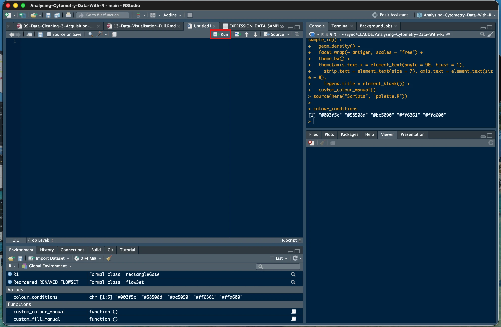

Chapter 4 Chapter 4 - File Management and Data Access
4.1 What We’re Building
Before we can analyse cytometry data, we need to organise our work properly. Think of this like setting up a laboratory - you need specific places for raw samples, processed data, and results. In R, we create a structured folder system and use tools that make file management consistent and portable.
We’ll accomplish three things:
- Create an organised folder structure for the course
- Set up an R Project so file paths work reliably
- Download and verify the course datasets
4.2 Version Notes
File hosting: Course data is available via GitHub Releases (Zenodo planned as a backup once beta testing is complete)
Dataset structure: One set of FCS files, already normalised, debarcoded, and gated to live singlets, plus a staged RDS/ folder that lets you jump into any later chapter without rerunning earlier ones
Approach: Uses R Projects and the here package for portable file paths
4.3 The Essentials
4.3.1 Step 1: Create Your Project Folder
Create a folder on your computer where you have plenty of space (the datasets total about 400MB). Name it something clear like Cytometry_R_Course.
Where to create it: Anywhere you can easily find it - Desktop, Documents, or a dedicated projects folder all work fine.
4.3.2 Step 2: Create an R Project
An R Project is a special file that tells RStudio where your work lives. This makes file management much easier.
- Open RStudio
- Click File > New Project
- Choose “Existing Directory”
- Navigate to the folder you just created
- Click “Create Project”
What this does: Creates a file ending in .Rproj in your folder. When you open this file, RStudio automatically sets your working directory correctly.
4.3.3 Step 3: Create Your Folder Structure with dir.create()
Every chapter in this course reads and writes files using the here package, always relative to this structure:
Cytometry_R_Course/
├── Cytometry_R_Course.Rproj
├── Data/
│ ├── fcs/ # 5 .fcs files, already normalised, debarcoded, and gated to live singlets
│ ├── ungated/ # the same 5 samples before gating, only needed for the optional Gating chapter's demo
│ ├── RDS/ # processed R objects, one file per pipeline stage
│ └── other/ # catchall for peripheral/supporting files, e.g. sample_info.csv
├── Scripts/ # your chapter scripts, plus the provided palette.R and backup/
├── Figures/ # empty for now - plots get saved here
├── Tables/ # empty for now - summary tables get saved here
└── Outputs/ # empty for now - diagnostic reports from packages like flowCut get saved hereYou’ll use dir.create() well beyond this course setup. Any time you start a new analysis and want to stay on the command line rather than clicking through a file explorer, this is how you’ll build your folder structure. Create all of it now:
library(here)
#> here() starts at /Users/dcarragher/Sync/CLAUDE/Analysing-Cytometry-Data-With-R
dir.create(here("Data", "RDS"), recursive = TRUE, showWarnings = FALSE)
dir.create(here("Scripts"), showWarnings = FALSE)
dir.create(here("Figures"), showWarnings = FALSE)
dir.create(here("Tables"), showWarnings = FALSE)
dir.create(here("Outputs"), showWarnings = FALSE)4.3.4 Step 4: Download This Course’s Data
This step is specific to this course, and it’s a bit artificial: in your own future analyses, your Data/fcs/ and Data/other/ folders would fill up with your own instrument output, not a downloaded ZIP. Here, everyone needs to start from identical data, so we provide it as one package. We only give you the final, ready-to-use data, not every intermediate processing stage, so you’re not stuck storing gigabytes you’ll never use.
Download the course datasets from: ACDwR-course-data-v1.zip (299 MB)
What you’re downloading: A ZIP file containing:
- FCS files, already normalised, debarcoded, and gated to live singlets (
Data/fcs/) - Peripheral/supporting files, e.g. sample metadata (
Data/other/) - A starter set of provided RDS files (
Data/RDS/), so you can jump ahead to any chapter
Extract the ZIP file into the folder structure you just created with dir.create() above.
Download the scripts too: ACDwR-scripts-v1.zip. It is tiny, and it extracts into the same folder. It holds two things:
Scripts/palette.R, one shared colour definition that Chapters 13 and 14 both load. Without it those chapters stop with a file-not-found error.Scripts/backup/, a working script for every chapter from 3 to 16, generated from this book. Use it as a safety net and keep writing your own scripts. When your own script will not run, open both and find the line that differs. Chapters 1 and 2 have no code worth keeping in a file, which is why the numbering starts at 3.
Note: Data/ungated/ isn’t part of this main download. It’s the same 5 samples before gating, only needed if you do the optional Gating chapter’s (Chapter 7) hands-on demo, and is provided separately from there, since most learners won’t need it.
Two files you’ll use throughout this course live in Data/other/: a metadata sheet, one row per sample, recording things like the experimental condition and patient ID, used to label results and compare conditions later. And a panel sheet, listing every channel on the instrument alongside the actual marker name it measures, used to turn cryptic metal-tag channel names like Nd145Di into readable marker names like CD4. Both get used starting in later chapters, we’re introducing them here so their purpose is clear before that code shows up.
4.3.5 Step 5: Work in a Script, Not the Console
Everything so far has gone into the Console. That was right for it: checking your R version is a one-off, and installing packages in Chapter 3 is something nobody keeps. Analysis is different. Console lines are not saved, so when you close RStudio they are gone, and with them any record of what you ran, in what order, and what you changed when something did not work.
From here on, the code in this course goes in a script, and the script goes in the Scripts/ folder you just created.
- File > New File > R Script. A pane opens at the top left, the Source pane.
- File > Save, navigate into
Scripts/, and name it04-File-Management.R. - Type or paste the code into the script rather than into the Console.
- Leave the cursor on the line you want and press Ctrl+Enter (Windows and Linux) or Cmd+Enter (Mac). The line runs in the Console below and the cursor drops to the next line. Select several lines first and the same keys run all of them in order.
- If you would rather click, the Run button at the top right of the Source pane does exactly the same thing as Ctrl+Enter: it runs the current line, or the lines you have selected.

Figure 4.1: The red box highlights the Run button, at the top right of the script. Here the Console has been moved to the top right; on a fresh install it sits below the script.
Typing in the script does nothing on its own until you send a line to the Console with Ctrl+Enter or Run. When you do, you will see the line appear in the Console after the > prompt, exactly as if you had typed it there, with its result or error underneath. If a result you expected never appears, check the Console first: the line may not have been sent.
The Console has not gone anywhere. It still runs the code and prints the results and the errors. What changes is that the script keeps a copy, so tomorrow you open the file and re-run it instead of rebuilding it from memory.
Run the rest of this chapter from that script, starting with Step 6 below. Then keep one script per chapter, named for the chapter, so Scripts/05-Data-Import.R is next.
Success check: Scripts/04-File-Management.R exists, it is open in the Source pane, and pressing Ctrl+Enter on a line runs it in the Console below.
4.3.6 Step 6: Verify here() Works
Success looks like this (Windows):
[1] "C:/Users/YourName/Documents/Cytometry_R_Course"Success looks like this (Mac):
[1] "/Users/YourName/Documents/Cytometry_R_Course"Problem looks like this:
[1] "C:/Users/YourName/Documents"If the path stops one level too early, or shows somewhere unexpected like your Downloads folder, RStudio didn’t open via the .Rproj file. Close RStudio, then double-click Cytometry_R_Course.Rproj in File Explorer to reopen it correctly.
4.3.7 Step 7: Verify Your Data
Check that the datasets are in the right place:
list.files(here("Data", "fcs"))
#> [1] "2PFANASPermLIVE.fcs"
#> [2] "3_fcs-files_Live Singlets_R-Gated"
#> [3] "4PFA1GLUTNASPermLIVE.fcs"
#> [4] "4PFANASPermLIVE.fcs"
#> [5] "4PFANoPermLIVE.fcs"
#> [6] "8PFANASPermLIVE.fcs"
#> [7] "pruned"Success looks like this:
[1] "2PFANASPermLIVE.fcs" "4PFA1GLUTNASPermLIVE.fcs" "4PFANASPermLIVE.fcs" "4PFANoPermLIVE.fcs" "8PFANASPermLIVE.fcs"Problem looks like this:
character(0)An empty result like this means the files aren’t in Data/fcs/. On Windows, double-check the ZIP extracted the files directly into that folder rather than into a nested subfolder, Windows’ built-in extractor sometimes creates an extra folder level named after the ZIP file.
You’re now ready to load cytometry data in the next chapter.
4.4 A Deeper Dive
4.4.1 Understanding Working Directories
A “working directory” is R’s current location in your computer’s file system. It’s like R’s “you are here” marker. When you tell R to load a file, it looks in the working directory unless you specify a complete path.
Check your working directory:
Why this matters: If R is in the wrong place, it won’t find your files. R Projects solve this by automatically setting the working directory to your project folder.
4.4.2 What R Projects Actually Do
An R Project is a file that RStudio recognises. When you open a .Rproj file, RStudio:
- Sets the working directory to the project folder
- Remembers which files you had open
- Restores your previous workspace settings
This means you can close RStudio, reopen the project later, and everything works exactly as before.
4.4.3 File Paths in R
Forward slashes vs backslashes:
Windows uses backslashes in file paths: C:\Users\Name\Documents
R uses forward slashes: C:/Users/Name/Documents
The backslash \ is an “escape character” in R, it has special meaning in the programming language. Using forward slashes avoids confusion.
Absolute vs relative paths:
Absolute path, complete location from the drive root:
"C:/Users/YourName/Documents/Cytometry_R_Course/Data/fcs"
#> [1] "C:/Users/YourName/Documents/Cytometry_R_Course/Data/fcs"Relative path, location from the current working directory:
Relative paths are portable - they work on any computer as long as the folder structure stays the same.
4.4.4 The here Package in Detail
The here package builds file paths relative to your project root. This solves the portability problem.
Without here:
# This only works on your computer
data <- read.csv("C:/Users/YourName/Cytometry_R_Course/Data/other/samples.csv")With here:
How here finds your project: It looks for special files that indicate a project root:
.Rprojfiles (highest priority).herefiles.gitfolders (for version control)
When you use here(), it builds paths starting from wherever it found one of these markers.
Building paths with here:
here() # Project root
#> [1] "/Users/dcarragher/Sync/CLAUDE/Analysing-Cytometry-Data-With-R"
here("Data") # Data folder
#> [1] "/Users/dcarragher/Sync/CLAUDE/Analysing-Cytometry-Data-With-R/Data"
here("Data", "fcs") # FCS subfolder
#> [1] "/Users/dcarragher/Sync/CLAUDE/Analysing-Cytometry-Data-With-R/Data/fcs"
here("Data", "fcs", "2PFANASPermLIVE.fcs") # A specific file
#> [1] "/Users/dcarragher/Sync/CLAUDE/Analysing-Cytometry-Data-With-R/Data/fcs/2PFANASPermLIVE.fcs"R automatically adds the correct separators between each component.
4.4.5 Why Just One Version of the FCS Data?
The Data/fcs/ files you download are already normalised, debarcoded, and gated to live singlets, the final, ready-to-analyse state, not raw instrument output. We don’t ship every intermediate processing stage (there can be several, each several times the size of the final files), just the data you’ll actually work with throughout the course.
The one exception is the Gating chapter, which demonstrates removing debris, doublets, and dead cells directly in R. That needs data which still has those events in it, so it uses its own separate example file, outside this project’s folder structure entirely. The chapter itself tells you how to get that file when you reach it.
4.4.6 Why a Staged RDS Folder?
Every processing step in this course, cleaning, gating, downsampling, transforming, clustering, saves its result as an RDS file in Data/RDS/, named to describe exactly what’s been done to it (for example ARCSINH_DOWNSAMPLED_CLEANED_FLOWSET.rds means cleaned, then downsampled, then arcsinh-transformed, in that order). We also ship a starter set of these files pre-made.
This means you don’t have to run every chapter in sequence to reach the one you’re interested in. Want to jump straight to clustering? Load the RDS file that matches the state clustering expects, and go. The one exception is Chapters 1-5: those chapters teach you how to set up this folder structure and import data in the first place, so we don’t hand you a pre-built version of them. Everything from Chapter 6 onward is fair game to skip into directly.
4.4.7 File Organisation Best Practices
Recommended structure for cytometry analysis:
Project_Root/
├── Data/
│ ├── fcs/ # Original FCS files (never modify)
│ ├── RDS/ # Processed R objects, one per pipeline stage
│ └── other/ # Catchall for peripheral/supporting files
├── Scripts/ # R code files
├── Figures/ # Plots and visualisations
├── Tables/ # Statistical summaries
└── Outputs/ # Diagnostic reports from packages like flowCutKeep this flat rather than nesting Figures/ and Tables/ inside a Results/ folder. That’s one less level to type in every here() call, and one less thing to get wrong.
Principles:
- Keep raw data separate and unmodified
- Use clear, descriptive folder and file names
- Group related files together
- Make structure consistent across the whole course
4.4.8 Creating Folders and Files
Create a new folder:
Create multiple folders at once:
Warning: Creating and deleting files in R is permanent. There’s no recycle bin or undo. When learning, it’s safer to create folders manually in your file explorer.
4.4.9 Navigating Folders in R
List folders (directories) in current location:
list.dirs()
#> [1] "."
#> [2] "./_book"
#> [3] "./_book/06-Data-Visualisation_files"
#> [4] "./_book/06-Data-Visualisation_files/figure-html"
#> [5] "./_book/07-Data-Cleaning-1-Gating-Data_files"
#> [6] "./_book/07-Data-Cleaning-1-Gating-Data_files/figure-html"
#> [7] "./_book/08-Data-Cleaning-2-Channel-Names_files"
#> [8] "./_book/08-Data-Cleaning-2-Channel-Names_files/figure-html"
#> [9] "./_book/09-Data-Cleaning-3-Acquisition-Anomalies_files"
#> [10] "./_book/09-Data-Cleaning-3-Acquisition-Anomalies_files/figure-html"
#> [11] "./_book/10-Downsampling_files"
#> [12] "./_book/10-Downsampling_files/figure-html"
#> [13] "./_book/11-Data-Transformation_files"
#> [14] "./_book/11-Data-Transformation_files/figure-html"
#> [15] "./_book/12-Extract-Expression-Data_files"
#> [16] "./_book/12-Extract-Expression-Data_files/figure-html"
#> [17] "./_book/13-Data-Visualisation-Full_files"
#> [18] "./_book/13-Data-Visualisation-Full_files/figure-html"
#> [19] "./_book/14-Dimensionality-Reduction_files"
#> [20] "./_book/14-Dimensionality-Reduction_files/figure-html"
#> [21] "./_book/15-Clustering_files"
#> [22] "./_book/15-Clustering_files/figure-html"
#> [23] "./_book/16-Statistics-and-Publication-Figures_files"
#> [24] "./_book/16-Statistics-and-Publication-Figures_files/figure-html"
#> [25] "./_book/Images"
#> [26] "./_book/libs"
#> [27] "./_book/libs/bootstrap-4.6.0"
#> [28] "./_book/libs/bootstrap-4.6.0/fonts"
#> [29] "./_book/libs/bootstrap-4.6.0/fonts/bootstrap"
#> [30] "./_book/libs/bs3compat-0.12.0"
#> [31] "./_book/libs/bs4_book-1.0.0"
#> [32] "./_book/libs/jquery-3.6.0"
#> [33] "./_bookdown_files"
#> [34] "./.git"
#> [35] "./.git/hooks"
#> [36] "./.git/info"
#> [37] "./.git/logs"
#> [38] "./.git/logs/refs"
#> [39] "./.git/logs/refs/heads"
#> [40] "./.git/logs/refs/remotes"
#> [41] "./.git/logs/refs/remotes/origin"
#> [42] "./.git/objects"
#> [43] "./.git/objects/09"
#> [44] "./.git/objects/0d"
#> [45] "./.git/objects/0e"
#> [46] "./.git/objects/16"
#> [47] "./.git/objects/17"
#> [48] "./.git/objects/1c"
#> [49] "./.git/objects/1d"
#> [50] "./.git/objects/1e"
#> [51] "./.git/objects/1f"
#> [52] "./.git/objects/25"
#> [53] "./.git/objects/27"
#> [54] "./.git/objects/29"
#> [55] "./.git/objects/2f"
#> [56] "./.git/objects/34"
#> [57] "./.git/objects/37"
#> [58] "./.git/objects/3a"
#> [59] "./.git/objects/3d"
#> [60] "./.git/objects/4b"
#> [61] "./.git/objects/52"
#> [62] "./.git/objects/54"
#> [63] "./.git/objects/55"
#> [64] "./.git/objects/5a"
#> [65] "./.git/objects/5f"
#> [66] "./.git/objects/60"
#> [67] "./.git/objects/62"
#> [68] "./.git/objects/64"
#> [69] "./.git/objects/68"
#> [70] "./.git/objects/6a"
#> [71] "./.git/objects/6e"
#> [72] "./.git/objects/76"
#> [73] "./.git/objects/78"
#> [74] "./.git/objects/7b"
#> [75] "./.git/objects/82"
#> [76] "./.git/objects/84"
#> [77] "./.git/objects/86"
#> [78] "./.git/objects/87"
#> [79] "./.git/objects/8a"
#> [80] "./.git/objects/8c"
#> [81] "./.git/objects/8d"
#> [82] "./.git/objects/9e"
#> [83] "./.git/objects/a0"
#> [84] "./.git/objects/a4"
#> [85] "./.git/objects/a5"
#> [86] "./.git/objects/a6"
#> [87] "./.git/objects/a7"
#> [88] "./.git/objects/af"
#> [89] "./.git/objects/b2"
#> [90] "./.git/objects/b7"
#> [91] "./.git/objects/b8"
#> [92] "./.git/objects/bd"
#> [93] "./.git/objects/c4"
#> [94] "./.git/objects/cb"
#> [95] "./.git/objects/ce"
#> [96] "./.git/objects/d1"
#> [97] "./.git/objects/d7"
#> [98] "./.git/objects/d8"
#> [99] "./.git/objects/de"
#> [100] "./.git/objects/e0"
#> [101] "./.git/objects/e3"
#> [102] "./.git/objects/e4"
#> [103] "./.git/objects/e8"
#> [104] "./.git/objects/e9"
#> [105] "./.git/objects/ee"
#> [106] "./.git/objects/f2"
#> [107] "./.git/objects/f6"
#> [108] "./.git/objects/fd"
#> [109] "./.git/objects/info"
#> [110] "./.git/objects/pack"
#> [111] "./.git/refs"
#> [112] "./.git/refs/heads"
#> [113] "./.git/refs/remotes"
#> [114] "./.git/refs/remotes/origin"
#> [115] "./.git/refs/tags"
#> [116] "./.Rproj.user"
#> [117] "./.Rproj.user/14051413"
#> [118] "./.Rproj.user/14051413/bibliography-index"
#> [119] "./.Rproj.user/14051413/bookdown-crossref"
#> [120] "./.Rproj.user/14051413/bookdown-crossref/Draft Chapters"
#> [121] "./.Rproj.user/14051413/ctx"
#> [122] "./.Rproj.user/14051413/explorer-cache"
#> [123] "./.Rproj.user/14051413/pcs"
#> [124] "./.Rproj.user/14051413/presentation"
#> [125] "./.Rproj.user/14051413/profiles-cache"
#> [126] "./.Rproj.user/14051413/sources"
#> [127] "./.Rproj.user/14051413/sources/per"
#> [128] "./.Rproj.user/14051413/sources/per/t"
#> [129] "./.Rproj.user/14051413/sources/per/u"
#> [130] "./.Rproj.user/14051413/sources/prop"
#> [131] "./.Rproj.user/14051413/tutorial"
#> [132] "./.Rproj.user/14051413/viewer_history"
#> [133] "./.Rproj.user/14051413/viewer-cache"
#> [134] "./.Rproj.user/5D1DEEE4"
#> [135] "./.Rproj.user/5D1DEEE4/bibliography-index"
#> [136] "./.Rproj.user/5D1DEEE4/bookdown-crossref"
#> [137] "./.Rproj.user/5D1DEEE4/bookdown-crossref/Draft Chapters"
#> [138] "./.Rproj.user/5D1DEEE4/ctx"
#> [139] "./.Rproj.user/5D1DEEE4/ctx/ctx-12177"
#> [140] "./.Rproj.user/5D1DEEE4/ctx/ctx-12177/plots_dir"
#> [141] "./.Rproj.user/5D1DEEE4/ctx/ctx-28667"
#> [142] "./.Rproj.user/5D1DEEE4/ctx/ctx-28667/plots_dir"
#> [143] "./.Rproj.user/5D1DEEE4/ctx/ctx-38729"
#> [144] "./.Rproj.user/5D1DEEE4/explorer-cache"
#> [145] "./.Rproj.user/5D1DEEE4/jobs"
#> [146] "./.Rproj.user/5D1DEEE4/pcs"
#> [147] "./.Rproj.user/5D1DEEE4/presentation"
#> [148] "./.Rproj.user/5D1DEEE4/profiles-cache"
#> [149] "./.Rproj.user/5D1DEEE4/sources"
#> [150] "./.Rproj.user/5D1DEEE4/sources/per"
#> [151] "./.Rproj.user/5D1DEEE4/sources/per/t"
#> [152] "./.Rproj.user/5D1DEEE4/sources/per/u"
#> [153] "./.Rproj.user/5D1DEEE4/sources/prop"
#> [154] "./.Rproj.user/5D1DEEE4/sources/session-51bf3f6d"
#> [155] "./.Rproj.user/5D1DEEE4/tutorial"
#> [156] "./.Rproj.user/5D1DEEE4/unsaved-notebooks"
#> [157] "./.Rproj.user/5D1DEEE4/unsaved-notebooks/3116FEEC"
#> [158] "./.Rproj.user/5D1DEEE4/unsaved-notebooks/3116FEEC/1"
#> [159] "./.Rproj.user/5D1DEEE4/unsaved-notebooks/6F2C8379"
#> [160] "./.Rproj.user/5D1DEEE4/unsaved-notebooks/6F2C8379/1"
#> [161] "./.Rproj.user/5D1DEEE4/unsaved-notebooks/8B6B3B6B"
#> [162] "./.Rproj.user/5D1DEEE4/unsaved-notebooks/8B6B3B6B/1"
#> [163] "./.Rproj.user/5D1DEEE4/unsaved-notebooks/8B6B3B6B/1/chhr9zffmrawh"
#> [164] "./.Rproj.user/5D1DEEE4/unsaved-notebooks/8B6B3B6B/1/crgidelpuq6cn"
#> [165] "./.Rproj.user/5D1DEEE4/unsaved-notebooks/8B6B3B6B/1/czzuwy6hyhu79"
#> [166] "./.Rproj.user/5D1DEEE4/unsaved-notebooks/AA55DE97"
#> [167] "./.Rproj.user/5D1DEEE4/unsaved-notebooks/AA55DE97/1"
#> [168] "./.Rproj.user/5D1DEEE4/viewer_history"
#> [169] "./.Rproj.user/5D1DEEE4/viewer-cache"
#> [170] "./.Rproj.user/C6C557C8"
#> [171] "./.Rproj.user/C6C557C8/bibliography-index"
#> [172] "./.Rproj.user/C6C557C8/bookdown-crossref"
#> [173] "./.Rproj.user/C6C557C8/bookdown-crossref/Draft Chapters"
#> [174] "./.Rproj.user/C6C557C8/ctx"
#> [175] "./.Rproj.user/C6C557C8/explorer-cache"
#> [176] "./.Rproj.user/C6C557C8/pcs"
#> [177] "./.Rproj.user/C6C557C8/presentation"
#> [178] "./.Rproj.user/C6C557C8/profiles-cache"
#> [179] "./.Rproj.user/C6C557C8/sources"
#> [180] "./.Rproj.user/C6C557C8/sources/per"
#> [181] "./.Rproj.user/C6C557C8/sources/per/t"
#> [182] "./.Rproj.user/C6C557C8/sources/per/u"
#> [183] "./.Rproj.user/C6C557C8/sources/prop"
#> [184] "./.Rproj.user/C6C557C8/tutorial"
#> [185] "./.Rproj.user/C6C557C8/unsaved-notebooks"
#> [186] "./.Rproj.user/C6C557C8/unsaved-notebooks/733BD921"
#> [187] "./.Rproj.user/C6C557C8/viewer_history"
#> [188] "./.Rproj.user/C6C557C8/viewer-cache"
#> [189] "./.Rproj.user/shared"
#> [190] "./.Rproj.user/shared/notebooks"
#> [191] "./.Rproj.user/shared/notebooks/063F4FBB-14-Dimensionality-Reduction"
#> [192] "./.Rproj.user/shared/notebooks/063F4FBB-14-Dimensionality-Reduction/1"
#> [193] "./.Rproj.user/shared/notebooks/063F4FBB-14-Dimensionality-Reduction/1/5D1DEEE43ad81c22"
#> [194] "./.Rproj.user/shared/notebooks/063F4FBB-14-Dimensionality-Reduction/1/s"
#> [195] "./.Rproj.user/shared/notebooks/063F4FBB-14-Dimensionality-Reduction/1/s/c02jgo7syq59e"
#> [196] "./.Rproj.user/shared/notebooks/063F4FBB-14-Dimensionality-Reduction/1/s/c06dlybq4zb25"
#> [197] "./.Rproj.user/shared/notebooks/063F4FBB-14-Dimensionality-Reduction/1/s/c0c7vggti3s9z"
#> [198] "./.Rproj.user/shared/notebooks/063F4FBB-14-Dimensionality-Reduction/1/s/c0df1p1krm8dl"
#> [199] "./.Rproj.user/shared/notebooks/063F4FBB-14-Dimensionality-Reduction/1/s/c0idry6lpluig"
#> [200] "./.Rproj.user/shared/notebooks/063F4FBB-14-Dimensionality-Reduction/1/s/c0thp1oqrpinu"
#> [201] "./.Rproj.user/shared/notebooks/063F4FBB-14-Dimensionality-Reduction/1/s/c102ga7df7idu"
#> [202] "./.Rproj.user/shared/notebooks/063F4FBB-14-Dimensionality-Reduction/1/s/c1c3j910cvrqg"
#> [203] "./.Rproj.user/shared/notebooks/063F4FBB-14-Dimensionality-Reduction/1/s/c1g0hzjoas0tc"
#> [204] "./.Rproj.user/shared/notebooks/063F4FBB-14-Dimensionality-Reduction/1/s/c1gz21bj3jpqf"
#> [205] "./.Rproj.user/shared/notebooks/063F4FBB-14-Dimensionality-Reduction/1/s/c1j2273p71cch"
#> [206] "./.Rproj.user/shared/notebooks/063F4FBB-14-Dimensionality-Reduction/1/s/c1juwyky89lxf"
#> [207] "./.Rproj.user/shared/notebooks/063F4FBB-14-Dimensionality-Reduction/1/s/c1kp3mzh4p428"
#> [208] "./.Rproj.user/shared/notebooks/063F4FBB-14-Dimensionality-Reduction/1/s/c1mhdf4l5ws00"
#> [209] "./.Rproj.user/shared/notebooks/063F4FBB-14-Dimensionality-Reduction/1/s/c1ofsp0evfwmu"
#> [210] "./.Rproj.user/shared/notebooks/063F4FBB-14-Dimensionality-Reduction/1/s/c21g38itq6b0i"
#> [211] "./.Rproj.user/shared/notebooks/063F4FBB-14-Dimensionality-Reduction/1/s/c2222kmxp1mop"
#> [212] "./.Rproj.user/shared/notebooks/063F4FBB-14-Dimensionality-Reduction/1/s/c23aag9ks9dia"
#> [213] "./.Rproj.user/shared/notebooks/063F4FBB-14-Dimensionality-Reduction/1/s/c25bcx9v0ezwp"
#> [214] "./.Rproj.user/shared/notebooks/063F4FBB-14-Dimensionality-Reduction/1/s/c2f8sa3nnd10h"
#> [215] "./.Rproj.user/shared/notebooks/063F4FBB-14-Dimensionality-Reduction/1/s/c2j8wupp0ld86"
#> [216] "./.Rproj.user/shared/notebooks/063F4FBB-14-Dimensionality-Reduction/1/s/c2kjf3box1xni"
#> [217] "./.Rproj.user/shared/notebooks/063F4FBB-14-Dimensionality-Reduction/1/s/c2xm66xdfku65"
#> [218] "./.Rproj.user/shared/notebooks/063F4FBB-14-Dimensionality-Reduction/1/s/c2zasp56wbymn"
#> [219] "./.Rproj.user/shared/notebooks/063F4FBB-14-Dimensionality-Reduction/1/s/c307am2av05dt"
#> [220] "./.Rproj.user/shared/notebooks/063F4FBB-14-Dimensionality-Reduction/1/s/c33anlgf2ucjl"
#> [221] "./.Rproj.user/shared/notebooks/063F4FBB-14-Dimensionality-Reduction/1/s/c3vgx8cl4r6wj"
#> [222] "./.Rproj.user/shared/notebooks/063F4FBB-14-Dimensionality-Reduction/1/s/c4di5sfkasiv2"
#> [223] "./.Rproj.user/shared/notebooks/063F4FBB-14-Dimensionality-Reduction/1/s/c4lslkwrgy7bu"
#> [224] "./.Rproj.user/shared/notebooks/063F4FBB-14-Dimensionality-Reduction/1/s/c4o34jos5a3q7"
#> [225] "./.Rproj.user/shared/notebooks/063F4FBB-14-Dimensionality-Reduction/1/s/c4phwa9tl0u4b"
#> [226] "./.Rproj.user/shared/notebooks/063F4FBB-14-Dimensionality-Reduction/1/s/c4r58632seh44"
#> [227] "./.Rproj.user/shared/notebooks/063F4FBB-14-Dimensionality-Reduction/1/s/c4v05m79k9xsn"
#> [228] "./.Rproj.user/shared/notebooks/063F4FBB-14-Dimensionality-Reduction/1/s/c4vhzb29gz25n"
#> [229] "./.Rproj.user/shared/notebooks/063F4FBB-14-Dimensionality-Reduction/1/s/c4x31jueb4ol3"
#> [230] "./.Rproj.user/shared/notebooks/063F4FBB-14-Dimensionality-Reduction/1/s/c56stj8ojcfek"
#> [231] "./.Rproj.user/shared/notebooks/063F4FBB-14-Dimensionality-Reduction/1/s/c586nw5f6zfpn"
#> [232] "./.Rproj.user/shared/notebooks/063F4FBB-14-Dimensionality-Reduction/1/s/c58z3yrmrckg8"
#> [233] "./.Rproj.user/shared/notebooks/063F4FBB-14-Dimensionality-Reduction/1/s/c5aibijj9fn1o"
#> [234] "./.Rproj.user/shared/notebooks/063F4FBB-14-Dimensionality-Reduction/1/s/c5jze6zih0q5l"
#> [235] "./.Rproj.user/shared/notebooks/063F4FBB-14-Dimensionality-Reduction/1/s/c5kb1lelb3c41"
#> [236] "./.Rproj.user/shared/notebooks/063F4FBB-14-Dimensionality-Reduction/1/s/c5kdgtzzmmdqz"
#> [237] "./.Rproj.user/shared/notebooks/063F4FBB-14-Dimensionality-Reduction/1/s/c5oquph7wgmi9"
#> [238] "./.Rproj.user/shared/notebooks/063F4FBB-14-Dimensionality-Reduction/1/s/c6cufi7wzs39v"
#> [239] "./.Rproj.user/shared/notebooks/063F4FBB-14-Dimensionality-Reduction/1/s/c6nb08fvklbfh"
#> [240] "./.Rproj.user/shared/notebooks/063F4FBB-14-Dimensionality-Reduction/1/s/c6oxd9wxgh4l5"
#> [241] "./.Rproj.user/shared/notebooks/063F4FBB-14-Dimensionality-Reduction/1/s/c6rgdn72936g0"
#> [242] "./.Rproj.user/shared/notebooks/063F4FBB-14-Dimensionality-Reduction/1/s/c6xym5t6j3jfx"
#> [243] "./.Rproj.user/shared/notebooks/063F4FBB-14-Dimensionality-Reduction/1/s/c72mldu1vho56"
#> [244] "./.Rproj.user/shared/notebooks/063F4FBB-14-Dimensionality-Reduction/1/s/c76sp2p15rmrk"
#> [245] "./.Rproj.user/shared/notebooks/063F4FBB-14-Dimensionality-Reduction/1/s/c7adks37na9ka"
#> [246] "./.Rproj.user/shared/notebooks/063F4FBB-14-Dimensionality-Reduction/1/s/c7ayrbduf8ucy"
#> [247] "./.Rproj.user/shared/notebooks/063F4FBB-14-Dimensionality-Reduction/1/s/c7difgq0vztiz"
#> [248] "./.Rproj.user/shared/notebooks/063F4FBB-14-Dimensionality-Reduction/1/s/c7lnalrqernm2"
#> [249] "./.Rproj.user/shared/notebooks/063F4FBB-14-Dimensionality-Reduction/1/s/c7op0afy96mek"
#> [250] "./.Rproj.user/shared/notebooks/063F4FBB-14-Dimensionality-Reduction/1/s/c7up3bvm6d06h"
#> [251] "./.Rproj.user/shared/notebooks/063F4FBB-14-Dimensionality-Reduction/1/s/c8105slk4ip07"
#> [252] "./.Rproj.user/shared/notebooks/063F4FBB-14-Dimensionality-Reduction/1/s/c829onfg2ep1q"
#> [253] "./.Rproj.user/shared/notebooks/063F4FBB-14-Dimensionality-Reduction/1/s/c8egfn159nbtc"
#> [254] "./.Rproj.user/shared/notebooks/063F4FBB-14-Dimensionality-Reduction/1/s/c8gvxf2n0s2ut"
#> [255] "./.Rproj.user/shared/notebooks/063F4FBB-14-Dimensionality-Reduction/1/s/c8k9aqw0z288f"
#> [256] "./.Rproj.user/shared/notebooks/063F4FBB-14-Dimensionality-Reduction/1/s/c8qhsns6qc3db"
#> [257] "./.Rproj.user/shared/notebooks/063F4FBB-14-Dimensionality-Reduction/1/s/c911iktcpw6t8"
#> [258] "./.Rproj.user/shared/notebooks/063F4FBB-14-Dimensionality-Reduction/1/s/c913c2m2u08wu"
#> [259] "./.Rproj.user/shared/notebooks/063F4FBB-14-Dimensionality-Reduction/1/s/c9bbw81e7motw"
#> [260] "./.Rproj.user/shared/notebooks/063F4FBB-14-Dimensionality-Reduction/1/s/c9bsn4ltqk26p"
#> [261] "./.Rproj.user/shared/notebooks/063F4FBB-14-Dimensionality-Reduction/1/s/c9cfjf0zxzuyf"
#> [262] "./.Rproj.user/shared/notebooks/063F4FBB-14-Dimensionality-Reduction/1/s/c9fdjg8ra7fzy"
#> [263] "./.Rproj.user/shared/notebooks/063F4FBB-14-Dimensionality-Reduction/1/s/c9ws0i05ghocy"
#> [264] "./.Rproj.user/shared/notebooks/063F4FBB-14-Dimensionality-Reduction/1/s/c9zjsk3vr00zs"
#> [265] "./.Rproj.user/shared/notebooks/063F4FBB-14-Dimensionality-Reduction/1/s/cadbon30l327c"
#> [266] "./.Rproj.user/shared/notebooks/063F4FBB-14-Dimensionality-Reduction/1/s/cae6v2b1no9zi"
#> [267] "./.Rproj.user/shared/notebooks/063F4FBB-14-Dimensionality-Reduction/1/s/caetw3q86cqji"
#> [268] "./.Rproj.user/shared/notebooks/063F4FBB-14-Dimensionality-Reduction/1/s/cai04qozxpjs6"
#> [269] "./.Rproj.user/shared/notebooks/063F4FBB-14-Dimensionality-Reduction/1/s/capvndxsfkeb3"
#> [270] "./.Rproj.user/shared/notebooks/063F4FBB-14-Dimensionality-Reduction/1/s/cavrhxk3u6vns"
#> [271] "./.Rproj.user/shared/notebooks/063F4FBB-14-Dimensionality-Reduction/1/s/cb4zv6gm278fn"
#> [272] "./.Rproj.user/shared/notebooks/063F4FBB-14-Dimensionality-Reduction/1/s/cbf2gkjo20add"
#> [273] "./.Rproj.user/shared/notebooks/063F4FBB-14-Dimensionality-Reduction/1/s/cbkoy32dtgzjz"
#> [274] "./.Rproj.user/shared/notebooks/063F4FBB-14-Dimensionality-Reduction/1/s/cbokgqml8aigj"
#> [275] "./.Rproj.user/shared/notebooks/063F4FBB-14-Dimensionality-Reduction/1/s/cbp9uuwol1o98"
#> [276] "./.Rproj.user/shared/notebooks/063F4FBB-14-Dimensionality-Reduction/1/s/cc6ge2z0xxyub"
#> [277] "./.Rproj.user/shared/notebooks/063F4FBB-14-Dimensionality-Reduction/1/s/ccqxjjv4pw9f2"
#> [278] "./.Rproj.user/shared/notebooks/063F4FBB-14-Dimensionality-Reduction/1/s/ccr5993fo3w5j"
#> [279] "./.Rproj.user/shared/notebooks/063F4FBB-14-Dimensionality-Reduction/1/s/ccz3g3g75lpl7"
#> [280] "./.Rproj.user/shared/notebooks/063F4FBB-14-Dimensionality-Reduction/1/s/cd16qz5fe51mn"
#> [281] "./.Rproj.user/shared/notebooks/063F4FBB-14-Dimensionality-Reduction/1/s/cdcw8q8482zsk"
#> [282] "./.Rproj.user/shared/notebooks/063F4FBB-14-Dimensionality-Reduction/1/s/cdilj8667n3ax"
#> [283] "./.Rproj.user/shared/notebooks/063F4FBB-14-Dimensionality-Reduction/1/s/cdl5z3ba1a4w5"
#> [284] "./.Rproj.user/shared/notebooks/063F4FBB-14-Dimensionality-Reduction/1/s/cdlyl7pi2z282"
#> [285] "./.Rproj.user/shared/notebooks/063F4FBB-14-Dimensionality-Reduction/1/s/cdmx9dfa93hdn"
#> [286] "./.Rproj.user/shared/notebooks/063F4FBB-14-Dimensionality-Reduction/1/s/cdpd60r6u2hvg"
#> [287] "./.Rproj.user/shared/notebooks/063F4FBB-14-Dimensionality-Reduction/1/s/ced1y330l546c"
#> [288] "./.Rproj.user/shared/notebooks/063F4FBB-14-Dimensionality-Reduction/1/s/ceo3nca3iveq5"
#> [289] "./.Rproj.user/shared/notebooks/063F4FBB-14-Dimensionality-Reduction/1/s/ceskdf25179gm"
#> [290] "./.Rproj.user/shared/notebooks/063F4FBB-14-Dimensionality-Reduction/1/s/cezavr0wep4tt"
#> [291] "./.Rproj.user/shared/notebooks/063F4FBB-14-Dimensionality-Reduction/1/s/cfdosbtl7iqgw"
#> [292] "./.Rproj.user/shared/notebooks/063F4FBB-14-Dimensionality-Reduction/1/s/cffs68z2yyt5y"
#> [293] "./.Rproj.user/shared/notebooks/063F4FBB-14-Dimensionality-Reduction/1/s/cg3fq87xvo7aq"
#> [294] "./.Rproj.user/shared/notebooks/063F4FBB-14-Dimensionality-Reduction/1/s/cg4v65i0awz9t"
#> [295] "./.Rproj.user/shared/notebooks/063F4FBB-14-Dimensionality-Reduction/1/s/cg54c4waoosn6"
#> [296] "./.Rproj.user/shared/notebooks/063F4FBB-14-Dimensionality-Reduction/1/s/cg8696ixdbijx"
#> [297] "./.Rproj.user/shared/notebooks/063F4FBB-14-Dimensionality-Reduction/1/s/cgb4n8jdtcst2"
#> [298] "./.Rproj.user/shared/notebooks/063F4FBB-14-Dimensionality-Reduction/1/s/cgbmci7vg027m"
#> [299] "./.Rproj.user/shared/notebooks/063F4FBB-14-Dimensionality-Reduction/1/s/cgmzct3s52ehp"
#> [300] "./.Rproj.user/shared/notebooks/063F4FBB-14-Dimensionality-Reduction/1/s/ch3eklhgw0um9"
#> [301] "./.Rproj.user/shared/notebooks/063F4FBB-14-Dimensionality-Reduction/1/s/chdeo55kom7ld"
#> [302] "./.Rproj.user/shared/notebooks/063F4FBB-14-Dimensionality-Reduction/1/s/chggvak4ggmpd"
#> [303] "./.Rproj.user/shared/notebooks/063F4FBB-14-Dimensionality-Reduction/1/s/chktb39u7zjhz"
#> [304] "./.Rproj.user/shared/notebooks/063F4FBB-14-Dimensionality-Reduction/1/s/chviqe0ollr2u"
#> [305] "./.Rproj.user/shared/notebooks/063F4FBB-14-Dimensionality-Reduction/1/s/chzhn6vliapiv"
#> [306] "./.Rproj.user/shared/notebooks/063F4FBB-14-Dimensionality-Reduction/1/s/ci2xv0fmy5td7"
#> [307] "./.Rproj.user/shared/notebooks/063F4FBB-14-Dimensionality-Reduction/1/s/ci4rgnj100mnw"
#> [308] "./.Rproj.user/shared/notebooks/063F4FBB-14-Dimensionality-Reduction/1/s/ci53yon1e4wb5"
#> [309] "./.Rproj.user/shared/notebooks/063F4FBB-14-Dimensionality-Reduction/1/s/cibdcrjj23xbc"
#> [310] "./.Rproj.user/shared/notebooks/063F4FBB-14-Dimensionality-Reduction/1/s/civ0n7la2ops7"
#> [311] "./.Rproj.user/shared/notebooks/063F4FBB-14-Dimensionality-Reduction/1/s/ciy6cdpufn7nz"
#> [312] "./.Rproj.user/shared/notebooks/063F4FBB-14-Dimensionality-Reduction/1/s/cizydesp96t6z"
#> [313] "./.Rproj.user/shared/notebooks/063F4FBB-14-Dimensionality-Reduction/1/s/cj5z7i965klei"
#> [314] "./.Rproj.user/shared/notebooks/063F4FBB-14-Dimensionality-Reduction/1/s/cjb4u0j53ld4u"
#> [315] "./.Rproj.user/shared/notebooks/063F4FBB-14-Dimensionality-Reduction/1/s/cjicgi3v0mzdj"
#> [316] "./.Rproj.user/shared/notebooks/063F4FBB-14-Dimensionality-Reduction/1/s/cjkjd49trr2xq"
#> [317] "./.Rproj.user/shared/notebooks/063F4FBB-14-Dimensionality-Reduction/1/s/ck1idktwqq0j0"
#> [318] "./.Rproj.user/shared/notebooks/063F4FBB-14-Dimensionality-Reduction/1/s/ck2hay3d4juxf"
#> [319] "./.Rproj.user/shared/notebooks/063F4FBB-14-Dimensionality-Reduction/1/s/ck358pwwi86jk"
#> [320] "./.Rproj.user/shared/notebooks/063F4FBB-14-Dimensionality-Reduction/1/s/ck8jm34jowzro"
#> [321] "./.Rproj.user/shared/notebooks/063F4FBB-14-Dimensionality-Reduction/1/s/ckjpbzxljoals"
#> [322] "./.Rproj.user/shared/notebooks/063F4FBB-14-Dimensionality-Reduction/1/s/ckolwbu7320zj"
#> [323] "./.Rproj.user/shared/notebooks/063F4FBB-14-Dimensionality-Reduction/1/s/cl05sq0jk4ppc"
#> [324] "./.Rproj.user/shared/notebooks/063F4FBB-14-Dimensionality-Reduction/1/s/cl21f24pci255"
#> [325] "./.Rproj.user/shared/notebooks/063F4FBB-14-Dimensionality-Reduction/1/s/cl2cltqzjsw2i"
#> [326] "./.Rproj.user/shared/notebooks/063F4FBB-14-Dimensionality-Reduction/1/s/clqg3ucxp2w9a"
#> [327] "./.Rproj.user/shared/notebooks/063F4FBB-14-Dimensionality-Reduction/1/s/cm1kdzkwcuoj7"
#> [328] "./.Rproj.user/shared/notebooks/063F4FBB-14-Dimensionality-Reduction/1/s/cm67mfyv5oafc"
#> [329] "./.Rproj.user/shared/notebooks/063F4FBB-14-Dimensionality-Reduction/1/s/cmdwfjoeif7kf"
#> [330] "./.Rproj.user/shared/notebooks/063F4FBB-14-Dimensionality-Reduction/1/s/cmiwj853y351c"
#> [331] "./.Rproj.user/shared/notebooks/063F4FBB-14-Dimensionality-Reduction/1/s/cmsva9uwztcjb"
#> [332] "./.Rproj.user/shared/notebooks/063F4FBB-14-Dimensionality-Reduction/1/s/cmv5nn3lp3fqe"
#> [333] "./.Rproj.user/shared/notebooks/063F4FBB-14-Dimensionality-Reduction/1/s/cmvk4ihesu0j2"
#> [334] "./.Rproj.user/shared/notebooks/063F4FBB-14-Dimensionality-Reduction/1/s/cmvnfkb3arhfm"
#> [335] "./.Rproj.user/shared/notebooks/063F4FBB-14-Dimensionality-Reduction/1/s/cmyyvzkknc31a"
#> [336] "./.Rproj.user/shared/notebooks/063F4FBB-14-Dimensionality-Reduction/1/s/cmzxo70rbql3l"
#> [337] "./.Rproj.user/shared/notebooks/063F4FBB-14-Dimensionality-Reduction/1/s/cn77jp7v5hm1u"
#> [338] "./.Rproj.user/shared/notebooks/063F4FBB-14-Dimensionality-Reduction/1/s/cnbadzvaw8if4"
#> [339] "./.Rproj.user/shared/notebooks/063F4FBB-14-Dimensionality-Reduction/1/s/cnq81yymte6e2"
#> [340] "./.Rproj.user/shared/notebooks/063F4FBB-14-Dimensionality-Reduction/1/s/covaw7rljidmq"
#> [341] "./.Rproj.user/shared/notebooks/063F4FBB-14-Dimensionality-Reduction/1/s/cp6kumode5803"
#> [342] "./.Rproj.user/shared/notebooks/063F4FBB-14-Dimensionality-Reduction/1/s/cp8a9pl008jmi"
#> [343] "./.Rproj.user/shared/notebooks/063F4FBB-14-Dimensionality-Reduction/1/s/cpc609tb7lzwq"
#> [344] "./.Rproj.user/shared/notebooks/063F4FBB-14-Dimensionality-Reduction/1/s/cpecf8597qypr"
#> [345] "./.Rproj.user/shared/notebooks/063F4FBB-14-Dimensionality-Reduction/1/s/cpf4ivllilj8d"
#> [346] "./.Rproj.user/shared/notebooks/063F4FBB-14-Dimensionality-Reduction/1/s/cppmnnyn9t03b"
#> [347] "./.Rproj.user/shared/notebooks/063F4FBB-14-Dimensionality-Reduction/1/s/cq2ti6g9ukbz4"
#> [348] "./.Rproj.user/shared/notebooks/063F4FBB-14-Dimensionality-Reduction/1/s/cq5hqpcddmfg9"
#> [349] "./.Rproj.user/shared/notebooks/063F4FBB-14-Dimensionality-Reduction/1/s/cqgdda9jmjitg"
#> [350] "./.Rproj.user/shared/notebooks/063F4FBB-14-Dimensionality-Reduction/1/s/cqpo1oo5hj6at"
#> [351] "./.Rproj.user/shared/notebooks/063F4FBB-14-Dimensionality-Reduction/1/s/cr1ccgwobq0pr"
#> [352] "./.Rproj.user/shared/notebooks/063F4FBB-14-Dimensionality-Reduction/1/s/cr48rcv4mwfd7"
#> [353] "./.Rproj.user/shared/notebooks/063F4FBB-14-Dimensionality-Reduction/1/s/cr9ydf17jzyak"
#> [354] "./.Rproj.user/shared/notebooks/063F4FBB-14-Dimensionality-Reduction/1/s/crihwegrzs9bv"
#> [355] "./.Rproj.user/shared/notebooks/063F4FBB-14-Dimensionality-Reduction/1/s/crp36xejet0tj"
#> [356] "./.Rproj.user/shared/notebooks/063F4FBB-14-Dimensionality-Reduction/1/s/crr5nvrpeakgv"
#> [357] "./.Rproj.user/shared/notebooks/063F4FBB-14-Dimensionality-Reduction/1/s/crz9zgmp0825i"
#> [358] "./.Rproj.user/shared/notebooks/063F4FBB-14-Dimensionality-Reduction/1/s/csftnfxztxw3a"
#> [359] "./.Rproj.user/shared/notebooks/063F4FBB-14-Dimensionality-Reduction/1/s/csneor30hjwt3"
#> [360] "./.Rproj.user/shared/notebooks/063F4FBB-14-Dimensionality-Reduction/1/s/ct08jaw0li0wx"
#> [361] "./.Rproj.user/shared/notebooks/063F4FBB-14-Dimensionality-Reduction/1/s/ct0pgn7mhoyai"
#> [362] "./.Rproj.user/shared/notebooks/063F4FBB-14-Dimensionality-Reduction/1/s/ct1ukdjqmgmrt"
#> [363] "./.Rproj.user/shared/notebooks/063F4FBB-14-Dimensionality-Reduction/1/s/ct61g5uz6jkrx"
#> [364] "./.Rproj.user/shared/notebooks/063F4FBB-14-Dimensionality-Reduction/1/s/ctbj1i124p9t6"
#> [365] "./.Rproj.user/shared/notebooks/063F4FBB-14-Dimensionality-Reduction/1/s/ctdxo7w00umz1"
#> [366] "./.Rproj.user/shared/notebooks/063F4FBB-14-Dimensionality-Reduction/1/s/ctkouyqqlbqgg"
#> [367] "./.Rproj.user/shared/notebooks/063F4FBB-14-Dimensionality-Reduction/1/s/ctnp0xensowqn"
#> [368] "./.Rproj.user/shared/notebooks/063F4FBB-14-Dimensionality-Reduction/1/s/ctsgogmnkuiyo"
#> [369] "./.Rproj.user/shared/notebooks/063F4FBB-14-Dimensionality-Reduction/1/s/cuhvjdo7lta7r"
#> [370] "./.Rproj.user/shared/notebooks/063F4FBB-14-Dimensionality-Reduction/1/s/cuouqtnxlb2zo"
#> [371] "./.Rproj.user/shared/notebooks/063F4FBB-14-Dimensionality-Reduction/1/s/cuxwm0giqhh8q"
#> [372] "./.Rproj.user/shared/notebooks/063F4FBB-14-Dimensionality-Reduction/1/s/cvellbga4akjb"
#> [373] "./.Rproj.user/shared/notebooks/063F4FBB-14-Dimensionality-Reduction/1/s/cvqikd9q81hjk"
#> [374] "./.Rproj.user/shared/notebooks/063F4FBB-14-Dimensionality-Reduction/1/s/cvrx5gpvtyb6s"
#> [375] "./.Rproj.user/shared/notebooks/063F4FBB-14-Dimensionality-Reduction/1/s/cw0x1ip7p76jd"
#> [376] "./.Rproj.user/shared/notebooks/063F4FBB-14-Dimensionality-Reduction/1/s/cwhrvpp6mlnsy"
#> [377] "./.Rproj.user/shared/notebooks/063F4FBB-14-Dimensionality-Reduction/1/s/cx0x48olao08z"
#> [378] "./.Rproj.user/shared/notebooks/063F4FBB-14-Dimensionality-Reduction/1/s/cx1w0id4ipllb"
#> [379] "./.Rproj.user/shared/notebooks/063F4FBB-14-Dimensionality-Reduction/1/s/cx2ikcm3oq2gn"
#> [380] "./.Rproj.user/shared/notebooks/063F4FBB-14-Dimensionality-Reduction/1/s/cx5lm8mabjmgt"
#> [381] "./.Rproj.user/shared/notebooks/063F4FBB-14-Dimensionality-Reduction/1/s/cx8mjlmu8t0rm"
#> [382] "./.Rproj.user/shared/notebooks/063F4FBB-14-Dimensionality-Reduction/1/s/cx9aw6dzbsd5t"
#> [383] "./.Rproj.user/shared/notebooks/063F4FBB-14-Dimensionality-Reduction/1/s/cxf2mc27qjpo5"
#> [384] "./.Rproj.user/shared/notebooks/063F4FBB-14-Dimensionality-Reduction/1/s/cxgunnyjnyfxf"
#> [385] "./.Rproj.user/shared/notebooks/063F4FBB-14-Dimensionality-Reduction/1/s/cxh3smv2piw09"
#> [386] "./.Rproj.user/shared/notebooks/063F4FBB-14-Dimensionality-Reduction/1/s/cxigd0sraszqt"
#> [387] "./.Rproj.user/shared/notebooks/063F4FBB-14-Dimensionality-Reduction/1/s/cxkrypoki8qd9"
#> [388] "./.Rproj.user/shared/notebooks/063F4FBB-14-Dimensionality-Reduction/1/s/cxr6h6tqf7bgp"
#> [389] "./.Rproj.user/shared/notebooks/063F4FBB-14-Dimensionality-Reduction/1/s/cygnlhome9pgy"
#> [390] "./.Rproj.user/shared/notebooks/063F4FBB-14-Dimensionality-Reduction/1/s/cyh88i6fywk4w"
#> [391] "./.Rproj.user/shared/notebooks/063F4FBB-14-Dimensionality-Reduction/1/s/cymaw7zymgs4y"
#> [392] "./.Rproj.user/shared/notebooks/063F4FBB-14-Dimensionality-Reduction/1/s/cz3r3lugik13f"
#> [393] "./.Rproj.user/shared/notebooks/063F4FBB-14-Dimensionality-Reduction/1/s/cz5s4dhhoumt5"
#> [394] "./.Rproj.user/shared/notebooks/063F4FBB-14-Dimensionality-Reduction/1/s/cz5xc42wyyhrf"
#> [395] "./.Rproj.user/shared/notebooks/063F4FBB-14-Dimensionality-Reduction/1/s/czencfuw0owb1"
#> [396] "./.Rproj.user/shared/notebooks/063F4FBB-14-Dimensionality-Reduction/1/s/czgu0xnvzshku"
#> [397] "./.Rproj.user/shared/notebooks/063F4FBB-14-Dimensionality-Reduction/1/s/czoz9lt22o219"
#> [398] "./.Rproj.user/shared/notebooks/063F4FBB-14-Dimensionality-Reduction/1/s/czpx0cp9ucpd2"
#> [399] "./.Rproj.user/shared/notebooks/07EA065D-01-Introduction"
#> [400] "./.Rproj.user/shared/notebooks/07EA065D-01-Introduction/1"
#> [401] "./.Rproj.user/shared/notebooks/07EA065D-01-Introduction/1/s"
#> [402] "./.Rproj.user/shared/notebooks/07EA065D-01-Introduction/1/s/cgmgldk7c2e9h"
#> [403] "./.Rproj.user/shared/notebooks/15EBD2E4-13-Data-Visualisation-Full"
#> [404] "./.Rproj.user/shared/notebooks/15EBD2E4-13-Data-Visualisation-Full/1"
#> [405] "./.Rproj.user/shared/notebooks/15EBD2E4-13-Data-Visualisation-Full/1/5D1DEEE451bf3f6d"
#> [406] "./.Rproj.user/shared/notebooks/15EBD2E4-13-Data-Visualisation-Full/1/s"
#> [407] "./.Rproj.user/shared/notebooks/15EBD2E4-13-Data-Visualisation-Full/1/s/c3i5ogad89rr1"
#> [408] "./.Rproj.user/shared/notebooks/15EBD2E4-13-Data-Visualisation-Full/1/s/cgqnni8rgotck"
#> [409] "./.Rproj.user/shared/notebooks/15EBD2E4-13-Data-Visualisation-Full/1/s/cunrc5db1uhj3"
#> [410] "./.Rproj.user/shared/notebooks/15EBD2E4-13-Data-Visualisation-Full/1/s/cvxxw8ny388ko"
#> [411] "./.Rproj.user/shared/notebooks/18163A08-03-Packages"
#> [412] "./.Rproj.user/shared/notebooks/18163A08-03-Packages/1"
#> [413] "./.Rproj.user/shared/notebooks/18163A08-03-Packages/1/5D1DEEE4ffcce124"
#> [414] "./.Rproj.user/shared/notebooks/18163A08-03-Packages/1/s"
#> [415] "./.Rproj.user/shared/notebooks/18163A08-03-Packages/1/s/c005ggl4rtz6x"
#> [416] "./.Rproj.user/shared/notebooks/18163A08-03-Packages/1/s/c01s0sc52fd1a"
#> [417] "./.Rproj.user/shared/notebooks/18163A08-03-Packages/1/s/c0lvd0uj8lpom"
#> [418] "./.Rproj.user/shared/notebooks/18163A08-03-Packages/1/s/c1av12ash12vg"
#> [419] "./.Rproj.user/shared/notebooks/18163A08-03-Packages/1/s/c3f0vuljvpgfi"
#> [420] "./.Rproj.user/shared/notebooks/18163A08-03-Packages/1/s/c5ei51rll67fl"
#> [421] "./.Rproj.user/shared/notebooks/18163A08-03-Packages/1/s/c5go9ty5aeh4o"
#> [422] "./.Rproj.user/shared/notebooks/18163A08-03-Packages/1/s/c7hpb5q9bbud9"
#> [423] "./.Rproj.user/shared/notebooks/18163A08-03-Packages/1/s/c8b0nwy69e9oi"
#> [424] "./.Rproj.user/shared/notebooks/18163A08-03-Packages/1/s/c93tphw6vvl81"
#> [425] "./.Rproj.user/shared/notebooks/18163A08-03-Packages/1/s/cb6vu1plga1uh"
#> [426] "./.Rproj.user/shared/notebooks/18163A08-03-Packages/1/s/ce09ku6nbfi3x"
#> [427] "./.Rproj.user/shared/notebooks/18163A08-03-Packages/1/s/cf5g1jhjtfklr"
#> [428] "./.Rproj.user/shared/notebooks/18163A08-03-Packages/1/s/cfsyf2ufe8mmq"
#> [429] "./.Rproj.user/shared/notebooks/18163A08-03-Packages/1/s/chrm22hbtu7nx"
#> [430] "./.Rproj.user/shared/notebooks/18163A08-03-Packages/1/s/chz9oz7yzrcwq"
#> [431] "./.Rproj.user/shared/notebooks/18163A08-03-Packages/1/s/cina86n62ufhq"
#> [432] "./.Rproj.user/shared/notebooks/18163A08-03-Packages/1/s/cj418bxxo4wzw"
#> [433] "./.Rproj.user/shared/notebooks/18163A08-03-Packages/1/s/cj6aye11tbruc"
#> [434] "./.Rproj.user/shared/notebooks/18163A08-03-Packages/1/s/cmt9bg0icmmoo"
#> [435] "./.Rproj.user/shared/notebooks/18163A08-03-Packages/1/s/ct6qb5wtg9hk8"
#> [436] "./.Rproj.user/shared/notebooks/18163A08-03-Packages/1/s/cva6om4g1ts4q"
#> [437] "./.Rproj.user/shared/notebooks/18163A08-03-Packages/1/s/cw4qdz71ukq5o"
#> [438] "./.Rproj.user/shared/notebooks/18163A08-03-Packages/1/s/cwzahhayg4cry"
#> [439] "./.Rproj.user/shared/notebooks/18163A08-03-Packages/1/s/cx30x3gyrmlmp"
#> [440] "./.Rproj.user/shared/notebooks/18163A08-03-Packages/1/s/cyoz6b8mrmvto"
#> [441] "./.Rproj.user/shared/notebooks/18163A08-03-Packages/1/s/cyvnat0mvwjm7"
#> [442] "./.Rproj.user/shared/notebooks/18163A08-03-Packages/1/s/czp8k1k99nlz8"
#> [443] "./.Rproj.user/shared/notebooks/214E625F-08-Data-Cleaning-2-Channel-Names"
#> [444] "./.Rproj.user/shared/notebooks/214E625F-08-Data-Cleaning-2-Channel-Names/1"
#> [445] "./.Rproj.user/shared/notebooks/214E625F-08-Data-Cleaning-2-Channel-Names/1/5D1DEEE4b3d301be"
#> [446] "./.Rproj.user/shared/notebooks/214E625F-08-Data-Cleaning-2-Channel-Names/1/s"
#> [447] "./.Rproj.user/shared/notebooks/214E625F-08-Data-Cleaning-2-Channel-Names/1/s/c28peb82qpj42"
#> [448] "./.Rproj.user/shared/notebooks/214E625F-08-Data-Cleaning-2-Channel-Names/1/s/c2aa6hj5s7kaz"
#> [449] "./.Rproj.user/shared/notebooks/214E625F-08-Data-Cleaning-2-Channel-Names/1/s/c2xnq3wdjdnz5"
#> [450] "./.Rproj.user/shared/notebooks/214E625F-08-Data-Cleaning-2-Channel-Names/1/s/c4dab7lso9s0f"
#> [451] "./.Rproj.user/shared/notebooks/214E625F-08-Data-Cleaning-2-Channel-Names/1/s/c4m2lxvjkn0a2"
#> [452] "./.Rproj.user/shared/notebooks/214E625F-08-Data-Cleaning-2-Channel-Names/1/s/c4tvz7gdgxmam"
#> [453] "./.Rproj.user/shared/notebooks/214E625F-08-Data-Cleaning-2-Channel-Names/1/s/c4y8cpvn0ghvg"
#> [454] "./.Rproj.user/shared/notebooks/214E625F-08-Data-Cleaning-2-Channel-Names/1/s/c5gb93ecf57rh"
#> [455] "./.Rproj.user/shared/notebooks/214E625F-08-Data-Cleaning-2-Channel-Names/1/s/c628ymvqtkjlv"
#> [456] "./.Rproj.user/shared/notebooks/214E625F-08-Data-Cleaning-2-Channel-Names/1/s/c6978w93b8k6y"
#> [457] "./.Rproj.user/shared/notebooks/214E625F-08-Data-Cleaning-2-Channel-Names/1/s/c6b9qmwqngwaf"
#> [458] "./.Rproj.user/shared/notebooks/214E625F-08-Data-Cleaning-2-Channel-Names/1/s/c6mqv3ofwu909"
#> [459] "./.Rproj.user/shared/notebooks/214E625F-08-Data-Cleaning-2-Channel-Names/1/s/c6q6y3hq8kb2l"
#> [460] "./.Rproj.user/shared/notebooks/214E625F-08-Data-Cleaning-2-Channel-Names/1/s/c7b2zc0fhvlno"
#> [461] "./.Rproj.user/shared/notebooks/214E625F-08-Data-Cleaning-2-Channel-Names/1/s/c8sx3u132f6fe"
#> [462] "./.Rproj.user/shared/notebooks/214E625F-08-Data-Cleaning-2-Channel-Names/1/s/c9f4pyn0ssbfa"
#> [463] "./.Rproj.user/shared/notebooks/214E625F-08-Data-Cleaning-2-Channel-Names/1/s/c9nkkejf8upqo"
#> [464] "./.Rproj.user/shared/notebooks/214E625F-08-Data-Cleaning-2-Channel-Names/1/s/c9utwcmesipxb"
#> [465] "./.Rproj.user/shared/notebooks/214E625F-08-Data-Cleaning-2-Channel-Names/1/s/cb6dem7lu1mmp"
#> [466] "./.Rproj.user/shared/notebooks/214E625F-08-Data-Cleaning-2-Channel-Names/1/s/cbsz9ngenk4r6"
#> [467] "./.Rproj.user/shared/notebooks/214E625F-08-Data-Cleaning-2-Channel-Names/1/s/cc174ula1pums"
#> [468] "./.Rproj.user/shared/notebooks/214E625F-08-Data-Cleaning-2-Channel-Names/1/s/cc5atmx69bk1q"
#> [469] "./.Rproj.user/shared/notebooks/214E625F-08-Data-Cleaning-2-Channel-Names/1/s/cc9kz80iwx1fd"
#> [470] "./.Rproj.user/shared/notebooks/214E625F-08-Data-Cleaning-2-Channel-Names/1/s/cc9kz80iwx1fd/temp"
#> [471] "./.Rproj.user/shared/notebooks/214E625F-08-Data-Cleaning-2-Channel-Names/1/s/ccg65e9nnfnly"
#> [472] "./.Rproj.user/shared/notebooks/214E625F-08-Data-Cleaning-2-Channel-Names/1/s/ccom0424vmv2d"
#> [473] "./.Rproj.user/shared/notebooks/214E625F-08-Data-Cleaning-2-Channel-Names/1/s/cecpn6e1vvrc3"
#> [474] "./.Rproj.user/shared/notebooks/214E625F-08-Data-Cleaning-2-Channel-Names/1/s/cenu97celwt3q"
#> [475] "./.Rproj.user/shared/notebooks/214E625F-08-Data-Cleaning-2-Channel-Names/1/s/cf92t23yzf5by"
#> [476] "./.Rproj.user/shared/notebooks/214E625F-08-Data-Cleaning-2-Channel-Names/1/s/cgdih67jmktyj"
#> [477] "./.Rproj.user/shared/notebooks/214E625F-08-Data-Cleaning-2-Channel-Names/1/s/cgdtimsqij9t9"
#> [478] "./.Rproj.user/shared/notebooks/214E625F-08-Data-Cleaning-2-Channel-Names/1/s/chmpdfwvqy447"
#> [479] "./.Rproj.user/shared/notebooks/214E625F-08-Data-Cleaning-2-Channel-Names/1/s/ci766rlkdcpe8"
#> [480] "./.Rproj.user/shared/notebooks/214E625F-08-Data-Cleaning-2-Channel-Names/1/s/ci766rlkdcpe8/temp"
#> [481] "./.Rproj.user/shared/notebooks/214E625F-08-Data-Cleaning-2-Channel-Names/1/s/cj17nf3vgrf4k"
#> [482] "./.Rproj.user/shared/notebooks/214E625F-08-Data-Cleaning-2-Channel-Names/1/s/cjcu1rmi0cary"
#> [483] "./.Rproj.user/shared/notebooks/214E625F-08-Data-Cleaning-2-Channel-Names/1/s/cljm1wmhvq1cj"
#> [484] "./.Rproj.user/shared/notebooks/214E625F-08-Data-Cleaning-2-Channel-Names/1/s/cmj4e7nllamna"
#> [485] "./.Rproj.user/shared/notebooks/214E625F-08-Data-Cleaning-2-Channel-Names/1/s/cmql8fd9uw8ft"
#> [486] "./.Rproj.user/shared/notebooks/214E625F-08-Data-Cleaning-2-Channel-Names/1/s/cmrz0ax9u38v6"
#> [487] "./.Rproj.user/shared/notebooks/214E625F-08-Data-Cleaning-2-Channel-Names/1/s/cmzea191cshxj"
#> [488] "./.Rproj.user/shared/notebooks/214E625F-08-Data-Cleaning-2-Channel-Names/1/s/cpiss5z5m4v88"
#> [489] "./.Rproj.user/shared/notebooks/214E625F-08-Data-Cleaning-2-Channel-Names/1/s/cqgsulvlinr42"
#> [490] "./.Rproj.user/shared/notebooks/214E625F-08-Data-Cleaning-2-Channel-Names/1/s/cqr1j86kxt5l7"
#> [491] "./.Rproj.user/shared/notebooks/214E625F-08-Data-Cleaning-2-Channel-Names/1/s/cqy1h9rwo3d6m"
#> [492] "./.Rproj.user/shared/notebooks/214E625F-08-Data-Cleaning-2-Channel-Names/1/s/cr0m3u4bzhbkw"
#> [493] "./.Rproj.user/shared/notebooks/214E625F-08-Data-Cleaning-2-Channel-Names/1/s/cs9xu8iouw8gc"
#> [494] "./.Rproj.user/shared/notebooks/214E625F-08-Data-Cleaning-2-Channel-Names/1/s/ct6jmwx6lqahk"
#> [495] "./.Rproj.user/shared/notebooks/214E625F-08-Data-Cleaning-2-Channel-Names/1/s/cty92h5znhfz2"
#> [496] "./.Rproj.user/shared/notebooks/214E625F-08-Data-Cleaning-2-Channel-Names/1/s/cu8jnyysmj8yx"
#> [497] "./.Rproj.user/shared/notebooks/214E625F-08-Data-Cleaning-2-Channel-Names/1/s/cxtkwttqsdikx"
#> [498] "./.Rproj.user/shared/notebooks/214E625F-08-Data-Cleaning-2-Channel-Names/1/s/cyzts0ks1hrj8"
#> [499] "./.Rproj.user/shared/notebooks/214E625F-08-Data-Cleaning-2-Channel-Names/1/s/cz6ea8j0miq8i"
#> [500] "./.Rproj.user/shared/notebooks/214E625F-08-Data-Cleaning-2-Channel-Names/1/s/czxjlwxqixvrh"
#> [501] "./.Rproj.user/shared/notebooks/2A0873F1-02-R-Environment-setup"
#> [502] "./.Rproj.user/shared/notebooks/2A0873F1-02-R-Environment-setup/1"
#> [503] "./.Rproj.user/shared/notebooks/2A0873F1-02-R-Environment-setup/1/s"
#> [504] "./.Rproj.user/shared/notebooks/2A0873F1-02-R-Environment-setup/1/s/c247nzn8ojmc1"
#> [505] "./.Rproj.user/shared/notebooks/2A0873F1-02-R-Environment-setup/1/s/c2prg3hha5rjz"
#> [506] "./.Rproj.user/shared/notebooks/2A0873F1-02-R-Environment-setup/1/s/caev3ofa3vfu4"
#> [507] "./.Rproj.user/shared/notebooks/2A0873F1-02-R-Environment-setup/1/s/cbn956jxldn8x"
#> [508] "./.Rproj.user/shared/notebooks/2A0873F1-02-R-Environment-setup/1/s/cg00lnuioeiei"
#> [509] "./.Rproj.user/shared/notebooks/2A0873F1-02-R-Environment-setup/1/s/cjwvezfnaga53"
#> [510] "./.Rproj.user/shared/notebooks/2A0873F1-02-R-Environment-setup/1/s/cl7oit2o2imd7"
#> [511] "./.Rproj.user/shared/notebooks/2A0873F1-02-R-Environment-setup/1/s/cllqbn6zix486"
#> [512] "./.Rproj.user/shared/notebooks/2A0873F1-02-R-Environment-setup/1/s/cm4gg473v3nxf"
#> [513] "./.Rproj.user/shared/notebooks/2A0873F1-02-R-Environment-setup/1/s/cm79qcazfrrg8"
#> [514] "./.Rproj.user/shared/notebooks/2A0873F1-02-R-Environment-setup/1/s/cnetjyhgg19nd"
#> [515] "./.Rproj.user/shared/notebooks/2A0873F1-02-R-Environment-setup/1/s/cno84qx80gqr7"
#> [516] "./.Rproj.user/shared/notebooks/2A0873F1-02-R-Environment-setup/1/s/cos5w6r7dwcf9"
#> [517] "./.Rproj.user/shared/notebooks/2A0873F1-02-R-Environment-setup/1/s/cp55x3n26zk4u"
#> [518] "./.Rproj.user/shared/notebooks/2A0873F1-02-R-Environment-setup/1/s/crvaflnx6glbk"
#> [519] "./.Rproj.user/shared/notebooks/2A0873F1-02-R-Environment-setup/1/s/cv0wv5w2jr31l"
#> [520] "./.Rproj.user/shared/notebooks/2A0873F1-02-R-Environment-setup/1/s/cvtczpqt2vm6n"
#> [521] "./.Rproj.user/shared/notebooks/2A0873F1-02-R-Environment-setup/1/s/cxepzxsy3k8q9"
#> [522] "./.Rproj.user/shared/notebooks/2FA3DDF9-04-File-Management"
#> [523] "./.Rproj.user/shared/notebooks/2FA3DDF9-04-File-Management/1"
#> [524] "./.Rproj.user/shared/notebooks/2FA3DDF9-04-File-Management/1/5D1DEEE4ffcce124"
#> [525] "./.Rproj.user/shared/notebooks/2FA3DDF9-04-File-Management/1/s"
#> [526] "./.Rproj.user/shared/notebooks/2FA3DDF9-04-File-Management/1/s/c0igmwg0bthhg"
#> [527] "./.Rproj.user/shared/notebooks/2FA3DDF9-04-File-Management/1/s/c60w1l2dwg6a4"
#> [528] "./.Rproj.user/shared/notebooks/2FA3DDF9-04-File-Management/1/s/c7q5kybf3jhwt"
#> [529] "./.Rproj.user/shared/notebooks/2FA3DDF9-04-File-Management/1/s/c97px006dpd06"
#> [530] "./.Rproj.user/shared/notebooks/2FA3DDF9-04-File-Management/1/s/cbcpwkf9h3znm"
#> [531] "./.Rproj.user/shared/notebooks/2FA3DDF9-04-File-Management/1/s/ccu3stxvizels"
#> [532] "./.Rproj.user/shared/notebooks/2FA3DDF9-04-File-Management/1/s/cd7td4eu6f2a8"
#> [533] "./.Rproj.user/shared/notebooks/2FA3DDF9-04-File-Management/1/s/cdxef2nqj2w5m"
#> [534] "./.Rproj.user/shared/notebooks/2FA3DDF9-04-File-Management/1/s/cesln8n5j1c4c"
#> [535] "./.Rproj.user/shared/notebooks/2FA3DDF9-04-File-Management/1/s/cfws0kaq19d3k"
#> [536] "./.Rproj.user/shared/notebooks/2FA3DDF9-04-File-Management/1/s/chbmh0ckwm2to"
#> [537] "./.Rproj.user/shared/notebooks/2FA3DDF9-04-File-Management/1/s/cllyeuxeg4twk"
#> [538] "./.Rproj.user/shared/notebooks/2FA3DDF9-04-File-Management/1/s/cq4pccbd97iga"
#> [539] "./.Rproj.user/shared/notebooks/2FA3DDF9-04-File-Management/1/s/cqmnpewnd3zx7"
#> [540] "./.Rproj.user/shared/notebooks/2FA3DDF9-04-File-Management/1/s/crfxy63hq96mv"
#> [541] "./.Rproj.user/shared/notebooks/387D5A8E-07-Data-Cleaning-1-Gating-Data"
#> [542] "./.Rproj.user/shared/notebooks/387D5A8E-07-Data-Cleaning-1-Gating-Data/1"
#> [543] "./.Rproj.user/shared/notebooks/387D5A8E-07-Data-Cleaning-1-Gating-Data/1/5D1DEEE4b3d301be"
#> [544] "./.Rproj.user/shared/notebooks/387D5A8E-07-Data-Cleaning-1-Gating-Data/1/5D1DEEE4e706522d"
#> [545] "./.Rproj.user/shared/notebooks/387D5A8E-07-Data-Cleaning-1-Gating-Data/1/s"
#> [546] "./.Rproj.user/shared/notebooks/387D5A8E-07-Data-Cleaning-1-Gating-Data/1/s/c01yzodt5yxpl"
#> [547] "./.Rproj.user/shared/notebooks/387D5A8E-07-Data-Cleaning-1-Gating-Data/1/s/c02nfmf5d93ga"
#> [548] "./.Rproj.user/shared/notebooks/387D5A8E-07-Data-Cleaning-1-Gating-Data/1/s/c05z3hxikqwyo"
#> [549] "./.Rproj.user/shared/notebooks/387D5A8E-07-Data-Cleaning-1-Gating-Data/1/s/c09uapzqqcw1i"
#> [550] "./.Rproj.user/shared/notebooks/387D5A8E-07-Data-Cleaning-1-Gating-Data/1/s/c0emby5qryoli"
#> [551] "./.Rproj.user/shared/notebooks/387D5A8E-07-Data-Cleaning-1-Gating-Data/1/s/c0hdtputl9cxr"
#> [552] "./.Rproj.user/shared/notebooks/387D5A8E-07-Data-Cleaning-1-Gating-Data/1/s/c0ick6dsn0pnr"
#> [553] "./.Rproj.user/shared/notebooks/387D5A8E-07-Data-Cleaning-1-Gating-Data/1/s/c0ml9r6mcyjad"
#> [554] "./.Rproj.user/shared/notebooks/387D5A8E-07-Data-Cleaning-1-Gating-Data/1/s/c0rxsl16z5960"
#> [555] "./.Rproj.user/shared/notebooks/387D5A8E-07-Data-Cleaning-1-Gating-Data/1/s/c0s35v29s8sqb"
#> [556] "./.Rproj.user/shared/notebooks/387D5A8E-07-Data-Cleaning-1-Gating-Data/1/s/c0txkw63cvlce"
#> [557] "./.Rproj.user/shared/notebooks/387D5A8E-07-Data-Cleaning-1-Gating-Data/1/s/c1e8vrdimz04k"
#> [558] "./.Rproj.user/shared/notebooks/387D5A8E-07-Data-Cleaning-1-Gating-Data/1/s/c1gsv5w093r2k"
#> [559] "./.Rproj.user/shared/notebooks/387D5A8E-07-Data-Cleaning-1-Gating-Data/1/s/c1kou2qbn7stj"
#> [560] "./.Rproj.user/shared/notebooks/387D5A8E-07-Data-Cleaning-1-Gating-Data/1/s/c1mt04qir9hge"
#> [561] "./.Rproj.user/shared/notebooks/387D5A8E-07-Data-Cleaning-1-Gating-Data/1/s/c24hyiu8yakj8"
#> [562] "./.Rproj.user/shared/notebooks/387D5A8E-07-Data-Cleaning-1-Gating-Data/1/s/c2bvt6h2szcmr"
#> [563] "./.Rproj.user/shared/notebooks/387D5A8E-07-Data-Cleaning-1-Gating-Data/1/s/c2evdy29msp0i"
#> [564] "./.Rproj.user/shared/notebooks/387D5A8E-07-Data-Cleaning-1-Gating-Data/1/s/c2falhdkr5t6n"
#> [565] "./.Rproj.user/shared/notebooks/387D5A8E-07-Data-Cleaning-1-Gating-Data/1/s/c2i8y3ctn1lv5"
#> [566] "./.Rproj.user/shared/notebooks/387D5A8E-07-Data-Cleaning-1-Gating-Data/1/s/c2lt11qkp8jxc"
#> [567] "./.Rproj.user/shared/notebooks/387D5A8E-07-Data-Cleaning-1-Gating-Data/1/s/c2mbntzzofrfe"
#> [568] "./.Rproj.user/shared/notebooks/387D5A8E-07-Data-Cleaning-1-Gating-Data/1/s/c2wr9f0et6qzn"
#> [569] "./.Rproj.user/shared/notebooks/387D5A8E-07-Data-Cleaning-1-Gating-Data/1/s/c31l6yp2gegzl"
#> [570] "./.Rproj.user/shared/notebooks/387D5A8E-07-Data-Cleaning-1-Gating-Data/1/s/c34v7lmuwdzxi"
#> [571] "./.Rproj.user/shared/notebooks/387D5A8E-07-Data-Cleaning-1-Gating-Data/1/s/c37lxqo5e7aof"
#> [572] "./.Rproj.user/shared/notebooks/387D5A8E-07-Data-Cleaning-1-Gating-Data/1/s/c3aqzk6m37vcc"
#> [573] "./.Rproj.user/shared/notebooks/387D5A8E-07-Data-Cleaning-1-Gating-Data/1/s/c3fidex30m7q2"
#> [574] "./.Rproj.user/shared/notebooks/387D5A8E-07-Data-Cleaning-1-Gating-Data/1/s/c3l5xj90tbbmx"
#> [575] "./.Rproj.user/shared/notebooks/387D5A8E-07-Data-Cleaning-1-Gating-Data/1/s/c3lhx27emdsmt"
#> [576] "./.Rproj.user/shared/notebooks/387D5A8E-07-Data-Cleaning-1-Gating-Data/1/s/c3wklz4poyi7b"
#> [577] "./.Rproj.user/shared/notebooks/387D5A8E-07-Data-Cleaning-1-Gating-Data/1/s/c3wpzqfr16vrr"
#> [578] "./.Rproj.user/shared/notebooks/387D5A8E-07-Data-Cleaning-1-Gating-Data/1/s/c49z0e571dbaq"
#> [579] "./.Rproj.user/shared/notebooks/387D5A8E-07-Data-Cleaning-1-Gating-Data/1/s/c4h9qqs1i7cqk"
#> [580] "./.Rproj.user/shared/notebooks/387D5A8E-07-Data-Cleaning-1-Gating-Data/1/s/c4l9o7y85cdwj"
#> [581] "./.Rproj.user/shared/notebooks/387D5A8E-07-Data-Cleaning-1-Gating-Data/1/s/c4pcif9cr26az"
#> [582] "./.Rproj.user/shared/notebooks/387D5A8E-07-Data-Cleaning-1-Gating-Data/1/s/c4pekg8naf6ji"
#> [583] "./.Rproj.user/shared/notebooks/387D5A8E-07-Data-Cleaning-1-Gating-Data/1/s/c4rq311euzk6g"
#> [584] "./.Rproj.user/shared/notebooks/387D5A8E-07-Data-Cleaning-1-Gating-Data/1/s/c4sy7pb4l2aju"
#> [585] "./.Rproj.user/shared/notebooks/387D5A8E-07-Data-Cleaning-1-Gating-Data/1/s/c4toabo8kvdqt"
#> [586] "./.Rproj.user/shared/notebooks/387D5A8E-07-Data-Cleaning-1-Gating-Data/1/s/c4vnvjnlb7113"
#> [587] "./.Rproj.user/shared/notebooks/387D5A8E-07-Data-Cleaning-1-Gating-Data/1/s/c4wgu7vecigcp"
#> [588] "./.Rproj.user/shared/notebooks/387D5A8E-07-Data-Cleaning-1-Gating-Data/1/s/c5bedxsxuchez"
#> [589] "./.Rproj.user/shared/notebooks/387D5A8E-07-Data-Cleaning-1-Gating-Data/1/s/c5g7kz3o2k29s"
#> [590] "./.Rproj.user/shared/notebooks/387D5A8E-07-Data-Cleaning-1-Gating-Data/1/s/c5x9cxi2uuvyt"
#> [591] "./.Rproj.user/shared/notebooks/387D5A8E-07-Data-Cleaning-1-Gating-Data/1/s/c629wlypd8kpj"
#> [592] "./.Rproj.user/shared/notebooks/387D5A8E-07-Data-Cleaning-1-Gating-Data/1/s/c660co42ku0a8"
#> [593] "./.Rproj.user/shared/notebooks/387D5A8E-07-Data-Cleaning-1-Gating-Data/1/s/c67uw0ozswgqv"
#> [594] "./.Rproj.user/shared/notebooks/387D5A8E-07-Data-Cleaning-1-Gating-Data/1/s/c6ct5s72ycrbs"
#> [595] "./.Rproj.user/shared/notebooks/387D5A8E-07-Data-Cleaning-1-Gating-Data/1/s/c6sneztn3ddf1"
#> [596] "./.Rproj.user/shared/notebooks/387D5A8E-07-Data-Cleaning-1-Gating-Data/1/s/c79kczqfnbohk"
#> [597] "./.Rproj.user/shared/notebooks/387D5A8E-07-Data-Cleaning-1-Gating-Data/1/s/c7drsn2mwfiql"
#> [598] "./.Rproj.user/shared/notebooks/387D5A8E-07-Data-Cleaning-1-Gating-Data/1/s/c820tvv99cl3e"
#> [599] "./.Rproj.user/shared/notebooks/387D5A8E-07-Data-Cleaning-1-Gating-Data/1/s/c86iju364j94j"
#> [600] "./.Rproj.user/shared/notebooks/387D5A8E-07-Data-Cleaning-1-Gating-Data/1/s/c8ghpb3fgaktu"
#> [601] "./.Rproj.user/shared/notebooks/387D5A8E-07-Data-Cleaning-1-Gating-Data/1/s/c8hf0g4v25ddu"
#> [602] "./.Rproj.user/shared/notebooks/387D5A8E-07-Data-Cleaning-1-Gating-Data/1/s/c8vyxan2pi2tr"
#> [603] "./.Rproj.user/shared/notebooks/387D5A8E-07-Data-Cleaning-1-Gating-Data/1/s/c930ildtozlcl"
#> [604] "./.Rproj.user/shared/notebooks/387D5A8E-07-Data-Cleaning-1-Gating-Data/1/s/c94x5th6f6wie"
#> [605] "./.Rproj.user/shared/notebooks/387D5A8E-07-Data-Cleaning-1-Gating-Data/1/s/c96db13cq1235"
#> [606] "./.Rproj.user/shared/notebooks/387D5A8E-07-Data-Cleaning-1-Gating-Data/1/s/c96hbgzxkqygc"
#> [607] "./.Rproj.user/shared/notebooks/387D5A8E-07-Data-Cleaning-1-Gating-Data/1/s/c9b6gginbrbf6"
#> [608] "./.Rproj.user/shared/notebooks/387D5A8E-07-Data-Cleaning-1-Gating-Data/1/s/c9gws2r2ynrbb"
#> [609] "./.Rproj.user/shared/notebooks/387D5A8E-07-Data-Cleaning-1-Gating-Data/1/s/c9hmyfwniuv8h"
#> [610] "./.Rproj.user/shared/notebooks/387D5A8E-07-Data-Cleaning-1-Gating-Data/1/s/c9lhqdeb6qj22"
#> [611] "./.Rproj.user/shared/notebooks/387D5A8E-07-Data-Cleaning-1-Gating-Data/1/s/c9pn2dx8iq6rf"
#> [612] "./.Rproj.user/shared/notebooks/387D5A8E-07-Data-Cleaning-1-Gating-Data/1/s/c9prgd29did9z"
#> [613] "./.Rproj.user/shared/notebooks/387D5A8E-07-Data-Cleaning-1-Gating-Data/1/s/c9tgjnmrz33uo"
#> [614] "./.Rproj.user/shared/notebooks/387D5A8E-07-Data-Cleaning-1-Gating-Data/1/s/capvs2m2ydq3d"
#> [615] "./.Rproj.user/shared/notebooks/387D5A8E-07-Data-Cleaning-1-Gating-Data/1/s/caqje9pbeo01q"
#> [616] "./.Rproj.user/shared/notebooks/387D5A8E-07-Data-Cleaning-1-Gating-Data/1/s/cb2hdudwtlldf"
#> [617] "./.Rproj.user/shared/notebooks/387D5A8E-07-Data-Cleaning-1-Gating-Data/1/s/cbf0ghbkrb63w"
#> [618] "./.Rproj.user/shared/notebooks/387D5A8E-07-Data-Cleaning-1-Gating-Data/1/s/cbp4mtidvso60"
#> [619] "./.Rproj.user/shared/notebooks/387D5A8E-07-Data-Cleaning-1-Gating-Data/1/s/cbqme84ta35bx"
#> [620] "./.Rproj.user/shared/notebooks/387D5A8E-07-Data-Cleaning-1-Gating-Data/1/s/cbs7gfupcqaig"
#> [621] "./.Rproj.user/shared/notebooks/387D5A8E-07-Data-Cleaning-1-Gating-Data/1/s/cc77i90vismy0"
#> [622] "./.Rproj.user/shared/notebooks/387D5A8E-07-Data-Cleaning-1-Gating-Data/1/s/cceebu420bpvm"
#> [623] "./.Rproj.user/shared/notebooks/387D5A8E-07-Data-Cleaning-1-Gating-Data/1/s/ccjd56y617xwb"
#> [624] "./.Rproj.user/shared/notebooks/387D5A8E-07-Data-Cleaning-1-Gating-Data/1/s/cck8zywjt21xd"
#> [625] "./.Rproj.user/shared/notebooks/387D5A8E-07-Data-Cleaning-1-Gating-Data/1/s/ccprrrjh0r28t"
#> [626] "./.Rproj.user/shared/notebooks/387D5A8E-07-Data-Cleaning-1-Gating-Data/1/s/ccpzw3h77j2ya"
#> [627] "./.Rproj.user/shared/notebooks/387D5A8E-07-Data-Cleaning-1-Gating-Data/1/s/ccx2ztv4gs2oo"
#> [628] "./.Rproj.user/shared/notebooks/387D5A8E-07-Data-Cleaning-1-Gating-Data/1/s/cde8ob2t6nvdz"
#> [629] "./.Rproj.user/shared/notebooks/387D5A8E-07-Data-Cleaning-1-Gating-Data/1/s/cdh5wf8c401j3"
#> [630] "./.Rproj.user/shared/notebooks/387D5A8E-07-Data-Cleaning-1-Gating-Data/1/s/cdhkuscm4c6hk"
#> [631] "./.Rproj.user/shared/notebooks/387D5A8E-07-Data-Cleaning-1-Gating-Data/1/s/cdmnmob7etbar"
#> [632] "./.Rproj.user/shared/notebooks/387D5A8E-07-Data-Cleaning-1-Gating-Data/1/s/cdokc4x10q66c"
#> [633] "./.Rproj.user/shared/notebooks/387D5A8E-07-Data-Cleaning-1-Gating-Data/1/s/cdwxczzrvwe0c"
#> [634] "./.Rproj.user/shared/notebooks/387D5A8E-07-Data-Cleaning-1-Gating-Data/1/s/cdyfc0ev4q5ik"
#> [635] "./.Rproj.user/shared/notebooks/387D5A8E-07-Data-Cleaning-1-Gating-Data/1/s/ce5crujmw4rdv"
#> [636] "./.Rproj.user/shared/notebooks/387D5A8E-07-Data-Cleaning-1-Gating-Data/1/s/ce66vzshwlojk"
#> [637] "./.Rproj.user/shared/notebooks/387D5A8E-07-Data-Cleaning-1-Gating-Data/1/s/ce7fmdzqdb40n"
#> [638] "./.Rproj.user/shared/notebooks/387D5A8E-07-Data-Cleaning-1-Gating-Data/1/s/cecmzbk8fsean"
#> [639] "./.Rproj.user/shared/notebooks/387D5A8E-07-Data-Cleaning-1-Gating-Data/1/s/ceopyodipbou5"
#> [640] "./.Rproj.user/shared/notebooks/387D5A8E-07-Data-Cleaning-1-Gating-Data/1/s/cetyly1ylgad9"
#> [641] "./.Rproj.user/shared/notebooks/387D5A8E-07-Data-Cleaning-1-Gating-Data/1/s/cezn2rn3rzgbq"
#> [642] "./.Rproj.user/shared/notebooks/387D5A8E-07-Data-Cleaning-1-Gating-Data/1/s/cf3wk8665quv9"
#> [643] "./.Rproj.user/shared/notebooks/387D5A8E-07-Data-Cleaning-1-Gating-Data/1/s/cf5bw3qeejmu8"
#> [644] "./.Rproj.user/shared/notebooks/387D5A8E-07-Data-Cleaning-1-Gating-Data/1/s/cf88178gv08bv"
#> [645] "./.Rproj.user/shared/notebooks/387D5A8E-07-Data-Cleaning-1-Gating-Data/1/s/cf8xvz65sy8a1"
#> [646] "./.Rproj.user/shared/notebooks/387D5A8E-07-Data-Cleaning-1-Gating-Data/1/s/cfpodz6rzg8qd"
#> [647] "./.Rproj.user/shared/notebooks/387D5A8E-07-Data-Cleaning-1-Gating-Data/1/s/cfxfbhg19isnn"
#> [648] "./.Rproj.user/shared/notebooks/387D5A8E-07-Data-Cleaning-1-Gating-Data/1/s/cg43mgdsa4wsj"
#> [649] "./.Rproj.user/shared/notebooks/387D5A8E-07-Data-Cleaning-1-Gating-Data/1/s/cgb1xzssrj9f0"
#> [650] "./.Rproj.user/shared/notebooks/387D5A8E-07-Data-Cleaning-1-Gating-Data/1/s/cgfjmf92yy4l6"
#> [651] "./.Rproj.user/shared/notebooks/387D5A8E-07-Data-Cleaning-1-Gating-Data/1/s/cggu6ut6pyo6u"
#> [652] "./.Rproj.user/shared/notebooks/387D5A8E-07-Data-Cleaning-1-Gating-Data/1/s/cgkn4nz0ijso0"
#> [653] "./.Rproj.user/shared/notebooks/387D5A8E-07-Data-Cleaning-1-Gating-Data/1/s/cgpntws5957ug"
#> [654] "./.Rproj.user/shared/notebooks/387D5A8E-07-Data-Cleaning-1-Gating-Data/1/s/cgza4aoc7in58"
#> [655] "./.Rproj.user/shared/notebooks/387D5A8E-07-Data-Cleaning-1-Gating-Data/1/s/ch2z2jp8vm6ln"
#> [656] "./.Rproj.user/shared/notebooks/387D5A8E-07-Data-Cleaning-1-Gating-Data/1/s/ch3cmn6iw023e"
#> [657] "./.Rproj.user/shared/notebooks/387D5A8E-07-Data-Cleaning-1-Gating-Data/1/s/ch69pr4z5f7pp"
#> [658] "./.Rproj.user/shared/notebooks/387D5A8E-07-Data-Cleaning-1-Gating-Data/1/s/ch8m5s9dlgh2e"
#> [659] "./.Rproj.user/shared/notebooks/387D5A8E-07-Data-Cleaning-1-Gating-Data/1/s/chczzocj6zah4"
#> [660] "./.Rproj.user/shared/notebooks/387D5A8E-07-Data-Cleaning-1-Gating-Data/1/s/cheops6yfg1rz"
#> [661] "./.Rproj.user/shared/notebooks/387D5A8E-07-Data-Cleaning-1-Gating-Data/1/s/chksmwpbdtrkx"
#> [662] "./.Rproj.user/shared/notebooks/387D5A8E-07-Data-Cleaning-1-Gating-Data/1/s/chniobzy7augt"
#> [663] "./.Rproj.user/shared/notebooks/387D5A8E-07-Data-Cleaning-1-Gating-Data/1/s/chq78y7c1cfq6"
#> [664] "./.Rproj.user/shared/notebooks/387D5A8E-07-Data-Cleaning-1-Gating-Data/1/s/chuqwlfa6gzya"
#> [665] "./.Rproj.user/shared/notebooks/387D5A8E-07-Data-Cleaning-1-Gating-Data/1/s/chuw5dfueh2jy"
#> [666] "./.Rproj.user/shared/notebooks/387D5A8E-07-Data-Cleaning-1-Gating-Data/1/s/chv04w2lykr4d"
#> [667] "./.Rproj.user/shared/notebooks/387D5A8E-07-Data-Cleaning-1-Gating-Data/1/s/ci0516wowdo28"
#> [668] "./.Rproj.user/shared/notebooks/387D5A8E-07-Data-Cleaning-1-Gating-Data/1/s/ci889a92bz1x8"
#> [669] "./.Rproj.user/shared/notebooks/387D5A8E-07-Data-Cleaning-1-Gating-Data/1/s/ciaruyszrik5c"
#> [670] "./.Rproj.user/shared/notebooks/387D5A8E-07-Data-Cleaning-1-Gating-Data/1/s/ciiv61fm8a8go"
#> [671] "./.Rproj.user/shared/notebooks/387D5A8E-07-Data-Cleaning-1-Gating-Data/1/s/cijeanljx2jb3"
#> [672] "./.Rproj.user/shared/notebooks/387D5A8E-07-Data-Cleaning-1-Gating-Data/1/s/ciocne081zdmg"
#> [673] "./.Rproj.user/shared/notebooks/387D5A8E-07-Data-Cleaning-1-Gating-Data/1/s/cix2efjya7mlx"
#> [674] "./.Rproj.user/shared/notebooks/387D5A8E-07-Data-Cleaning-1-Gating-Data/1/s/cj4rhz7buc3kl"
#> [675] "./.Rproj.user/shared/notebooks/387D5A8E-07-Data-Cleaning-1-Gating-Data/1/s/cjbrre2ktez2g"
#> [676] "./.Rproj.user/shared/notebooks/387D5A8E-07-Data-Cleaning-1-Gating-Data/1/s/cjjojoplf17y7"
#> [677] "./.Rproj.user/shared/notebooks/387D5A8E-07-Data-Cleaning-1-Gating-Data/1/s/cjpszfvmh7y65"
#> [678] "./.Rproj.user/shared/notebooks/387D5A8E-07-Data-Cleaning-1-Gating-Data/1/s/cjxez35ypnwko"
#> [679] "./.Rproj.user/shared/notebooks/387D5A8E-07-Data-Cleaning-1-Gating-Data/1/s/ck0w436gizvm9"
#> [680] "./.Rproj.user/shared/notebooks/387D5A8E-07-Data-Cleaning-1-Gating-Data/1/s/ckdr7b39yj5n6"
#> [681] "./.Rproj.user/shared/notebooks/387D5A8E-07-Data-Cleaning-1-Gating-Data/1/s/ckk8lutowlfa4"
#> [682] "./.Rproj.user/shared/notebooks/387D5A8E-07-Data-Cleaning-1-Gating-Data/1/s/cko9ruqgxbt3d"
#> [683] "./.Rproj.user/shared/notebooks/387D5A8E-07-Data-Cleaning-1-Gating-Data/1/s/ckrbd7gi86zwd"
#> [684] "./.Rproj.user/shared/notebooks/387D5A8E-07-Data-Cleaning-1-Gating-Data/1/s/cl845dty6qeki"
#> [685] "./.Rproj.user/shared/notebooks/387D5A8E-07-Data-Cleaning-1-Gating-Data/1/s/cla8yi64hrzhf"
#> [686] "./.Rproj.user/shared/notebooks/387D5A8E-07-Data-Cleaning-1-Gating-Data/1/s/clcp7dom535az"
#> [687] "./.Rproj.user/shared/notebooks/387D5A8E-07-Data-Cleaning-1-Gating-Data/1/s/clha4mm385u30"
#> [688] "./.Rproj.user/shared/notebooks/387D5A8E-07-Data-Cleaning-1-Gating-Data/1/s/cln1zhjm8nra8"
#> [689] "./.Rproj.user/shared/notebooks/387D5A8E-07-Data-Cleaning-1-Gating-Data/1/s/clvexqtodrf3j"
#> [690] "./.Rproj.user/shared/notebooks/387D5A8E-07-Data-Cleaning-1-Gating-Data/1/s/cly6m8wlm92eh"
#> [691] "./.Rproj.user/shared/notebooks/387D5A8E-07-Data-Cleaning-1-Gating-Data/1/s/clzgpqtba8iyh"
#> [692] "./.Rproj.user/shared/notebooks/387D5A8E-07-Data-Cleaning-1-Gating-Data/1/s/cm7mx15igj0a3"
#> [693] "./.Rproj.user/shared/notebooks/387D5A8E-07-Data-Cleaning-1-Gating-Data/1/s/cmaew00utesip"
#> [694] "./.Rproj.user/shared/notebooks/387D5A8E-07-Data-Cleaning-1-Gating-Data/1/s/cmbabkbsq2tka"
#> [695] "./.Rproj.user/shared/notebooks/387D5A8E-07-Data-Cleaning-1-Gating-Data/1/s/cmea5xhd6moip"
#> [696] "./.Rproj.user/shared/notebooks/387D5A8E-07-Data-Cleaning-1-Gating-Data/1/s/cmflcou5zzbl8"
#> [697] "./.Rproj.user/shared/notebooks/387D5A8E-07-Data-Cleaning-1-Gating-Data/1/s/cmmdsvg6a8eii"
#> [698] "./.Rproj.user/shared/notebooks/387D5A8E-07-Data-Cleaning-1-Gating-Data/1/s/cmr8r0l8rqciz"
#> [699] "./.Rproj.user/shared/notebooks/387D5A8E-07-Data-Cleaning-1-Gating-Data/1/s/cmro9pa22hcyl"
#> [700] "./.Rproj.user/shared/notebooks/387D5A8E-07-Data-Cleaning-1-Gating-Data/1/s/cmwim43f0q6p5"
#> [701] "./.Rproj.user/shared/notebooks/387D5A8E-07-Data-Cleaning-1-Gating-Data/1/s/cn0hk3qldys2g"
#> [702] "./.Rproj.user/shared/notebooks/387D5A8E-07-Data-Cleaning-1-Gating-Data/1/s/cn3kudy4u012p"
#> [703] "./.Rproj.user/shared/notebooks/387D5A8E-07-Data-Cleaning-1-Gating-Data/1/s/cn5f0otjmy8mo"
#> [704] "./.Rproj.user/shared/notebooks/387D5A8E-07-Data-Cleaning-1-Gating-Data/1/s/cn5sdb029ku4s"
#> [705] "./.Rproj.user/shared/notebooks/387D5A8E-07-Data-Cleaning-1-Gating-Data/1/s/cnmagpwwhgzbp"
#> [706] "./.Rproj.user/shared/notebooks/387D5A8E-07-Data-Cleaning-1-Gating-Data/1/s/cnsmwqs5i5bjh"
#> [707] "./.Rproj.user/shared/notebooks/387D5A8E-07-Data-Cleaning-1-Gating-Data/1/s/cnv7i9imu3ozm"
#> [708] "./.Rproj.user/shared/notebooks/387D5A8E-07-Data-Cleaning-1-Gating-Data/1/s/cocch88dh9vta"
#> [709] "./.Rproj.user/shared/notebooks/387D5A8E-07-Data-Cleaning-1-Gating-Data/1/s/cofz1z6guclsw"
#> [710] "./.Rproj.user/shared/notebooks/387D5A8E-07-Data-Cleaning-1-Gating-Data/1/s/coi162ruhexfb"
#> [711] "./.Rproj.user/shared/notebooks/387D5A8E-07-Data-Cleaning-1-Gating-Data/1/s/conr2w5agqb80"
#> [712] "./.Rproj.user/shared/notebooks/387D5A8E-07-Data-Cleaning-1-Gating-Data/1/s/cop8tmdnf24y9"
#> [713] "./.Rproj.user/shared/notebooks/387D5A8E-07-Data-Cleaning-1-Gating-Data/1/s/coxvnccm1ipxg"
#> [714] "./.Rproj.user/shared/notebooks/387D5A8E-07-Data-Cleaning-1-Gating-Data/1/s/cp0vrtpaqjx4a"
#> [715] "./.Rproj.user/shared/notebooks/387D5A8E-07-Data-Cleaning-1-Gating-Data/1/s/cp29cz2fyrwng"
#> [716] "./.Rproj.user/shared/notebooks/387D5A8E-07-Data-Cleaning-1-Gating-Data/1/s/cpdzn9wqqo9je"
#> [717] "./.Rproj.user/shared/notebooks/387D5A8E-07-Data-Cleaning-1-Gating-Data/1/s/cpjilhc0w1uj7"
#> [718] "./.Rproj.user/shared/notebooks/387D5A8E-07-Data-Cleaning-1-Gating-Data/1/s/cpr3hvefktetp"
#> [719] "./.Rproj.user/shared/notebooks/387D5A8E-07-Data-Cleaning-1-Gating-Data/1/s/cprio2unoopma"
#> [720] "./.Rproj.user/shared/notebooks/387D5A8E-07-Data-Cleaning-1-Gating-Data/1/s/cq8gd0h12zwr9"
#> [721] "./.Rproj.user/shared/notebooks/387D5A8E-07-Data-Cleaning-1-Gating-Data/1/s/cqdj054lbv4pm"
#> [722] "./.Rproj.user/shared/notebooks/387D5A8E-07-Data-Cleaning-1-Gating-Data/1/s/cqhlaj8yqbfek"
#> [723] "./.Rproj.user/shared/notebooks/387D5A8E-07-Data-Cleaning-1-Gating-Data/1/s/cqlxqtr6m5wtc"
#> [724] "./.Rproj.user/shared/notebooks/387D5A8E-07-Data-Cleaning-1-Gating-Data/1/s/cqo2n5vboqe4b"
#> [725] "./.Rproj.user/shared/notebooks/387D5A8E-07-Data-Cleaning-1-Gating-Data/1/s/cqyfmu85y7iju"
#> [726] "./.Rproj.user/shared/notebooks/387D5A8E-07-Data-Cleaning-1-Gating-Data/1/s/cr61x2ff9po1l"
#> [727] "./.Rproj.user/shared/notebooks/387D5A8E-07-Data-Cleaning-1-Gating-Data/1/s/cr6jprgw32683"
#> [728] "./.Rproj.user/shared/notebooks/387D5A8E-07-Data-Cleaning-1-Gating-Data/1/s/crkaeg7imdm5w"
#> [729] "./.Rproj.user/shared/notebooks/387D5A8E-07-Data-Cleaning-1-Gating-Data/1/s/crvsn4vq8f90x"
#> [730] "./.Rproj.user/shared/notebooks/387D5A8E-07-Data-Cleaning-1-Gating-Data/1/s/cs4hgd7msq9e3"
#> [731] "./.Rproj.user/shared/notebooks/387D5A8E-07-Data-Cleaning-1-Gating-Data/1/s/cscfeytpz3c3u"
#> [732] "./.Rproj.user/shared/notebooks/387D5A8E-07-Data-Cleaning-1-Gating-Data/1/s/csj8m9yq8o2dc"
#> [733] "./.Rproj.user/shared/notebooks/387D5A8E-07-Data-Cleaning-1-Gating-Data/1/s/csmuop1x7nbn6"
#> [734] "./.Rproj.user/shared/notebooks/387D5A8E-07-Data-Cleaning-1-Gating-Data/1/s/css4fay5r2aqa"
#> [735] "./.Rproj.user/shared/notebooks/387D5A8E-07-Data-Cleaning-1-Gating-Data/1/s/cswl096mppjwa"
#> [736] "./.Rproj.user/shared/notebooks/387D5A8E-07-Data-Cleaning-1-Gating-Data/1/s/cszhlu4uj0s2v"
#> [737] "./.Rproj.user/shared/notebooks/387D5A8E-07-Data-Cleaning-1-Gating-Data/1/s/ct8809eqxc7l4"
#> [738] "./.Rproj.user/shared/notebooks/387D5A8E-07-Data-Cleaning-1-Gating-Data/1/s/ctc1cs49q1xsy"
#> [739] "./.Rproj.user/shared/notebooks/387D5A8E-07-Data-Cleaning-1-Gating-Data/1/s/ctdxoca21183s"
#> [740] "./.Rproj.user/shared/notebooks/387D5A8E-07-Data-Cleaning-1-Gating-Data/1/s/ctp6m8o5vp8vh"
#> [741] "./.Rproj.user/shared/notebooks/387D5A8E-07-Data-Cleaning-1-Gating-Data/1/s/cttbg3yht2lgc"
#> [742] "./.Rproj.user/shared/notebooks/387D5A8E-07-Data-Cleaning-1-Gating-Data/1/s/cu53ra4q0yoq8"
#> [743] "./.Rproj.user/shared/notebooks/387D5A8E-07-Data-Cleaning-1-Gating-Data/1/s/cu81fx4sm3sl2"
#> [744] "./.Rproj.user/shared/notebooks/387D5A8E-07-Data-Cleaning-1-Gating-Data/1/s/cueafrnl0cfb8"
#> [745] "./.Rproj.user/shared/notebooks/387D5A8E-07-Data-Cleaning-1-Gating-Data/1/s/cv1a4mdjk95b1"
#> [746] "./.Rproj.user/shared/notebooks/387D5A8E-07-Data-Cleaning-1-Gating-Data/1/s/cv240xn1plil9"
#> [747] "./.Rproj.user/shared/notebooks/387D5A8E-07-Data-Cleaning-1-Gating-Data/1/s/cvd458vh2kolu"
#> [748] "./.Rproj.user/shared/notebooks/387D5A8E-07-Data-Cleaning-1-Gating-Data/1/s/cvn05f8kpcyxa"
#> [749] "./.Rproj.user/shared/notebooks/387D5A8E-07-Data-Cleaning-1-Gating-Data/1/s/cvn1bc08570p5"
#> [750] "./.Rproj.user/shared/notebooks/387D5A8E-07-Data-Cleaning-1-Gating-Data/1/s/cvs5xwrh5thnl"
#> [751] "./.Rproj.user/shared/notebooks/387D5A8E-07-Data-Cleaning-1-Gating-Data/1/s/cvv0q5xvrtesk"
#> [752] "./.Rproj.user/shared/notebooks/387D5A8E-07-Data-Cleaning-1-Gating-Data/1/s/cwq52l9tqq48v"
#> [753] "./.Rproj.user/shared/notebooks/387D5A8E-07-Data-Cleaning-1-Gating-Data/1/s/cwrcujlhatzlv"
#> [754] "./.Rproj.user/shared/notebooks/387D5A8E-07-Data-Cleaning-1-Gating-Data/1/s/cx33y95xiclbg"
#> [755] "./.Rproj.user/shared/notebooks/387D5A8E-07-Data-Cleaning-1-Gating-Data/1/s/cx7njz241y632"
#> [756] "./.Rproj.user/shared/notebooks/387D5A8E-07-Data-Cleaning-1-Gating-Data/1/s/cxaugavzryqc1"
#> [757] "./.Rproj.user/shared/notebooks/387D5A8E-07-Data-Cleaning-1-Gating-Data/1/s/cxd793bj0tlp3"
#> [758] "./.Rproj.user/shared/notebooks/387D5A8E-07-Data-Cleaning-1-Gating-Data/1/s/cxkw8yhlnnx5d"
#> [759] "./.Rproj.user/shared/notebooks/387D5A8E-07-Data-Cleaning-1-Gating-Data/1/s/cybtemvftpzv5"
#> [760] "./.Rproj.user/shared/notebooks/387D5A8E-07-Data-Cleaning-1-Gating-Data/1/s/cyjytzqspoti8"
#> [761] "./.Rproj.user/shared/notebooks/387D5A8E-07-Data-Cleaning-1-Gating-Data/1/s/cylpd1gp0siel"
#> [762] "./.Rproj.user/shared/notebooks/387D5A8E-07-Data-Cleaning-1-Gating-Data/1/s/cyozlny085vqm"
#> [763] "./.Rproj.user/shared/notebooks/387D5A8E-07-Data-Cleaning-1-Gating-Data/1/s/cywak3av7rh9w"
#> [764] "./.Rproj.user/shared/notebooks/387D5A8E-07-Data-Cleaning-1-Gating-Data/1/s/cz65iepwph9ka"
#> [765] "./.Rproj.user/shared/notebooks/387D5A8E-07-Data-Cleaning-1-Gating-Data/1/s/cz6bq6zbxoq43"
#> [766] "./.Rproj.user/shared/notebooks/387D5A8E-07-Data-Cleaning-1-Gating-Data/1/s/cz8g2i2mcmvun"
#> [767] "./.Rproj.user/shared/notebooks/387D5A8E-07-Data-Cleaning-1-Gating-Data/1/s/czo5at7kng1wr"
#> [768] "./.Rproj.user/shared/notebooks/387D5A8E-07-Data-Cleaning-1-Gating-Data/1/s/czxebv48oxw14"
#> [769] "./.Rproj.user/shared/notebooks/387D5A8E-07-Data-Cleaning-1-Gating-Data/1/s/czy30fufbfovc"
#> [770] "./.Rproj.user/shared/notebooks/387D5A8E-07-Data-Cleaning-1-Gating-Data/1/s/czysbdxh86kk9"
#> [771] "./.Rproj.user/shared/notebooks/387D5A8E-07-Data-Cleaning-1-Gating-Data/1/s/czyzmsvbjr723"
#> [772] "./.Rproj.user/shared/notebooks/387D5A8E-07-Data-Cleaning-1-Gating-Data/1/s/czzua3rfzk13g"
#> [773] "./.Rproj.user/shared/notebooks/4CEBFE11-05-Data-Import"
#> [774] "./.Rproj.user/shared/notebooks/4CEBFE11-05-Data-Import/1"
#> [775] "./.Rproj.user/shared/notebooks/4CEBFE11-05-Data-Import/1/5D1DEEE4628d3670"
#> [776] "./.Rproj.user/shared/notebooks/4CEBFE11-05-Data-Import/1/s"
#> [777] "./.Rproj.user/shared/notebooks/5B566C2A-index"
#> [778] "./.Rproj.user/shared/notebooks/5B566C2A-index/1"
#> [779] "./.Rproj.user/shared/notebooks/5B566C2A-index/1/5D1DEEE41778adb6"
#> [780] "./.Rproj.user/shared/notebooks/5B566C2A-index/1/5D1DEEE4b211018f"
#> [781] "./.Rproj.user/shared/notebooks/5B566C2A-index/1/5D1DEEE4e83b9473"
#> [782] "./.Rproj.user/shared/notebooks/5B566C2A-index/1/s"
#> [783] "./.Rproj.user/shared/notebooks/73A4DF29-03-Packages"
#> [784] "./.Rproj.user/shared/notebooks/73A4DF29-03-Packages/1"
#> [785] "./.Rproj.user/shared/notebooks/73A4DF29-03-Packages/1/5D1DEEE43cee7c50"
#> [786] "./.Rproj.user/shared/notebooks/73A4DF29-03-Packages/1/5D1DEEE4628d3670"
#> [787] "./.Rproj.user/shared/notebooks/73A4DF29-03-Packages/1/5D1DEEE47ed02fb7"
#> [788] "./.Rproj.user/shared/notebooks/73A4DF29-03-Packages/1/5D1DEEE4e09923c"
#> [789] "./.Rproj.user/shared/notebooks/73A4DF29-03-Packages/1/s"
#> [790] "./.Rproj.user/shared/notebooks/73A4DF29-03-Packages/1/s/c9eg90q0uurg1"
#> [791] "./.Rproj.user/shared/notebooks/73A4DF29-03-Packages/1/s/c9eg90q0uurg1_t"
#> [792] "./.Rproj.user/shared/notebooks/73A4DF29-03-Packages/1/s/ccq578ud8lvvx"
#> [793] "./.Rproj.user/shared/notebooks/73A4DF29-03-Packages/1/s/cv8aqpqucc66h"
#> [794] "./.Rproj.user/shared/notebooks/758486D0-07-Data-Cleaning-1-Gating-Data"
#> [795] "./.Rproj.user/shared/notebooks/758486D0-07-Data-Cleaning-1-Gating-Data/1"
#> [796] "./.Rproj.user/shared/notebooks/758486D0-07-Data-Cleaning-1-Gating-Data/1/5D1DEEE451bf3f6d"
#> [797] "./.Rproj.user/shared/notebooks/758486D0-07-Data-Cleaning-1-Gating-Data/1/s"
#> [798] "./.Rproj.user/shared/notebooks/758486D0-07-Data-Cleaning-1-Gating-Data/1/s/c148c9rv09moj"
#> [799] "./.Rproj.user/shared/notebooks/758486D0-07-Data-Cleaning-1-Gating-Data/1/s/c1qv8kwm3b9gs"
#> [800] "./.Rproj.user/shared/notebooks/758486D0-07-Data-Cleaning-1-Gating-Data/1/s/cc6mb7gilxwa0"
#> [801] "./.Rproj.user/shared/notebooks/758486D0-07-Data-Cleaning-1-Gating-Data/1/s/ccfblxtx9wr5j"
#> [802] "./.Rproj.user/shared/notebooks/758486D0-07-Data-Cleaning-1-Gating-Data/1/s/cfy7y7b6ext5z"
#> [803] "./.Rproj.user/shared/notebooks/758486D0-07-Data-Cleaning-1-Gating-Data/1/s/coia0f94kf6k2"
#> [804] "./.Rproj.user/shared/notebooks/758486D0-07-Data-Cleaning-1-Gating-Data/1/s/csdrxt95wp4rw"
#> [805] "./.Rproj.user/shared/notebooks/758486D0-07-Data-Cleaning-1-Gating-Data/1/s/cthoupud5lqfl"
#> [806] "./.Rproj.user/shared/notebooks/758486D0-07-Data-Cleaning-1-Gating-Data/1/s/cu5i41d97zu0y"
#> [807] "./.Rproj.user/shared/notebooks/758486D0-07-Data-Cleaning-1-Gating-Data/1/s/cyz4ee3hbe822"
#> [808] "./.Rproj.user/shared/notebooks/7A83E00D-08-Data-Cleaning-3-Acquisition-Anomalies"
#> [809] "./.Rproj.user/shared/notebooks/7A83E00D-08-Data-Cleaning-3-Acquisition-Anomalies/1"
#> [810] "./.Rproj.user/shared/notebooks/7A83E00D-08-Data-Cleaning-3-Acquisition-Anomalies/1/5D1DEEE41778adb6"
#> [811] "./.Rproj.user/shared/notebooks/7A83E00D-08-Data-Cleaning-3-Acquisition-Anomalies/1/5D1DEEE4b211018f"
#> [812] "./.Rproj.user/shared/notebooks/7A83E00D-08-Data-Cleaning-3-Acquisition-Anomalies/1/s"
#> [813] "./.Rproj.user/shared/notebooks/7F9C08B3-09-Data-Transformation"
#> [814] "./.Rproj.user/shared/notebooks/7F9C08B3-09-Data-Transformation/1"
#> [815] "./.Rproj.user/shared/notebooks/7F9C08B3-09-Data-Transformation/1/5D1DEEE4d2175271"
#> [816] "./.Rproj.user/shared/notebooks/7F9C08B3-09-Data-Transformation/1/s"
#> [817] "./.Rproj.user/shared/notebooks/96887F79-04-File-Management"
#> [818] "./.Rproj.user/shared/notebooks/96887F79-04-File-Management/1"
#> [819] "./.Rproj.user/shared/notebooks/96887F79-04-File-Management/1/5D1DEEE4628d3670"
#> [820] "./.Rproj.user/shared/notebooks/96887F79-04-File-Management/1/s"
#> [821] "./.Rproj.user/shared/notebooks/AD2E42F7-10-Downsampling"
#> [822] "./.Rproj.user/shared/notebooks/AD2E42F7-10-Downsampling/1"
#> [823] "./.Rproj.user/shared/notebooks/AD2E42F7-10-Downsampling/1/5D1DEEE486f249e3"
#> [824] "./.Rproj.user/shared/notebooks/AD2E42F7-10-Downsampling/1/s"
#> [825] "./.Rproj.user/shared/notebooks/AD2E42F7-10-Downsampling/1/s/c0lwjrinp7xn8"
#> [826] "./.Rproj.user/shared/notebooks/AD2E42F7-10-Downsampling/1/s/c2qesphqv4zar"
#> [827] "./.Rproj.user/shared/notebooks/AD2E42F7-10-Downsampling/1/s/ca8b22mcj0l5s"
#> [828] "./.Rproj.user/shared/notebooks/AD2E42F7-10-Downsampling/1/s/cnm12m1726kc5"
#> [829] "./.Rproj.user/shared/notebooks/AD2E42F7-10-Downsampling/1/s/cqazc623czd3r"
#> [830] "./.Rproj.user/shared/notebooks/AD2E42F7-10-Downsampling/1/s/cswbi7b8qtzl5"
#> [831] "./.Rproj.user/shared/notebooks/AD2E42F7-10-Downsampling/1/s/cuhvk37a5bmsg"
#> [832] "./.Rproj.user/shared/notebooks/AD2E42F7-10-Downsampling/1/s/cyiz3iqihl39h"
#> [833] "./.Rproj.user/shared/notebooks/BD00D605-05-Data-Import"
#> [834] "./.Rproj.user/shared/notebooks/BD00D605-05-Data-Import/1"
#> [835] "./.Rproj.user/shared/notebooks/BD00D605-05-Data-Import/1/5D1DEEE44e70cfb6"
#> [836] "./.Rproj.user/shared/notebooks/BD00D605-05-Data-Import/1/5D1DEEE4ffcce124"
#> [837] "./.Rproj.user/shared/notebooks/BD00D605-05-Data-Import/1/s"
#> [838] "./.Rproj.user/shared/notebooks/BD00D605-05-Data-Import/1/s/c0p6vs9nd8h44"
#> [839] "./.Rproj.user/shared/notebooks/BD00D605-05-Data-Import/1/s/c1kpgjlkv3ozs"
#> [840] "./.Rproj.user/shared/notebooks/BD00D605-05-Data-Import/1/s/c1txnqrjzu1ck"
#> [841] "./.Rproj.user/shared/notebooks/BD00D605-05-Data-Import/1/s/c2htzecsko1dw"
#> [842] "./.Rproj.user/shared/notebooks/BD00D605-05-Data-Import/1/s/c36oo6ngkll2v"
#> [843] "./.Rproj.user/shared/notebooks/BD00D605-05-Data-Import/1/s/c3o4g4ziq0760"
#> [844] "./.Rproj.user/shared/notebooks/BD00D605-05-Data-Import/1/s/c3sw99g6yvr57"
#> [845] "./.Rproj.user/shared/notebooks/BD00D605-05-Data-Import/1/s/c4ewto267sov2"
#> [846] "./.Rproj.user/shared/notebooks/BD00D605-05-Data-Import/1/s/c4n02vhmf5nso"
#> [847] "./.Rproj.user/shared/notebooks/BD00D605-05-Data-Import/1/s/c666lu82q1vnk"
#> [848] "./.Rproj.user/shared/notebooks/BD00D605-05-Data-Import/1/s/c6ay2przp9g2t"
#> [849] "./.Rproj.user/shared/notebooks/BD00D605-05-Data-Import/1/s/c6cowmoeyfqiu"
#> [850] "./.Rproj.user/shared/notebooks/BD00D605-05-Data-Import/1/s/c6skkdy3oogc9"
#> [851] "./.Rproj.user/shared/notebooks/BD00D605-05-Data-Import/1/s/c7f7g0iunafzn"
#> [852] "./.Rproj.user/shared/notebooks/BD00D605-05-Data-Import/1/s/c7rc382g0z4yb"
#> [853] "./.Rproj.user/shared/notebooks/BD00D605-05-Data-Import/1/s/c7vavp6dadzrv"
#> [854] "./.Rproj.user/shared/notebooks/BD00D605-05-Data-Import/1/s/c9dd8wclpfgr4"
#> [855] "./.Rproj.user/shared/notebooks/BD00D605-05-Data-Import/1/s/c9imwvqguidxf"
#> [856] "./.Rproj.user/shared/notebooks/BD00D605-05-Data-Import/1/s/c9tpghthicjj0"
#> [857] "./.Rproj.user/shared/notebooks/BD00D605-05-Data-Import/1/s/cbbimb48lrgaf"
#> [858] "./.Rproj.user/shared/notebooks/BD00D605-05-Data-Import/1/s/cbmowcso22ps8"
#> [859] "./.Rproj.user/shared/notebooks/BD00D605-05-Data-Import/1/s/cbtwjp6ayy7a5"
#> [860] "./.Rproj.user/shared/notebooks/BD00D605-05-Data-Import/1/s/ccfmnppp8anm3"
#> [861] "./.Rproj.user/shared/notebooks/BD00D605-05-Data-Import/1/s/cd5wptn50ybqi"
#> [862] "./.Rproj.user/shared/notebooks/BD00D605-05-Data-Import/1/s/ce708wmnnxr1l"
#> [863] "./.Rproj.user/shared/notebooks/BD00D605-05-Data-Import/1/s/cekxmanv0nb8p"
#> [864] "./.Rproj.user/shared/notebooks/BD00D605-05-Data-Import/1/s/cep3qevh23s23"
#> [865] "./.Rproj.user/shared/notebooks/BD00D605-05-Data-Import/1/s/cf94nx2cw10ul"
#> [866] "./.Rproj.user/shared/notebooks/BD00D605-05-Data-Import/1/s/cfroe6sn3imse"
#> [867] "./.Rproj.user/shared/notebooks/BD00D605-05-Data-Import/1/s/cfyep7z6hv7os"
#> [868] "./.Rproj.user/shared/notebooks/BD00D605-05-Data-Import/1/s/cgkvxnxphdmuw"
#> [869] "./.Rproj.user/shared/notebooks/BD00D605-05-Data-Import/1/s/cgtlrbn58p8cm"
#> [870] "./.Rproj.user/shared/notebooks/BD00D605-05-Data-Import/1/s/cgv1rcsfewm0m"
#> [871] "./.Rproj.user/shared/notebooks/BD00D605-05-Data-Import/1/s/chikfw9nvsfd4"
#> [872] "./.Rproj.user/shared/notebooks/BD00D605-05-Data-Import/1/s/cioqwsrzmwkkm"
#> [873] "./.Rproj.user/shared/notebooks/BD00D605-05-Data-Import/1/s/cj4admlxbfo1r"
#> [874] "./.Rproj.user/shared/notebooks/BD00D605-05-Data-Import/1/s/cjh8zb1bpqg73"
#> [875] "./.Rproj.user/shared/notebooks/BD00D605-05-Data-Import/1/s/cjxa9ixt1ohl5"
#> [876] "./.Rproj.user/shared/notebooks/BD00D605-05-Data-Import/1/s/ckaz0in08oh4e"
#> [877] "./.Rproj.user/shared/notebooks/BD00D605-05-Data-Import/1/s/clipqag1hfnw4"
#> [878] "./.Rproj.user/shared/notebooks/BD00D605-05-Data-Import/1/s/cmrwmskzyquhf"
#> [879] "./.Rproj.user/shared/notebooks/BD00D605-05-Data-Import/1/s/cnkmuezcc6rk1"
#> [880] "./.Rproj.user/shared/notebooks/BD00D605-05-Data-Import/1/s/cnrnc1pdzrewq"
#> [881] "./.Rproj.user/shared/notebooks/BD00D605-05-Data-Import/1/s/cny9j3b84sxs3"
#> [882] "./.Rproj.user/shared/notebooks/BD00D605-05-Data-Import/1/s/co132ish21ghl"
#> [883] "./.Rproj.user/shared/notebooks/BD00D605-05-Data-Import/1/s/co2u12moqhy56"
#> [884] "./.Rproj.user/shared/notebooks/BD00D605-05-Data-Import/1/s/cost5h6gehxfv"
#> [885] "./.Rproj.user/shared/notebooks/BD00D605-05-Data-Import/1/s/cp8brbhzd31n3"
#> [886] "./.Rproj.user/shared/notebooks/BD00D605-05-Data-Import/1/s/cpq3oj18kyzve"
#> [887] "./.Rproj.user/shared/notebooks/BD00D605-05-Data-Import/1/s/cq2wriy1nnskv"
#> [888] "./.Rproj.user/shared/notebooks/BD00D605-05-Data-Import/1/s/cq9i2pq1y54lq"
#> [889] "./.Rproj.user/shared/notebooks/BD00D605-05-Data-Import/1/s/crpdtpe8sgsrj"
#> [890] "./.Rproj.user/shared/notebooks/BD00D605-05-Data-Import/1/s/cs7xz3poe5z0b"
#> [891] "./.Rproj.user/shared/notebooks/BD00D605-05-Data-Import/1/s/cs9m2api6qeev"
#> [892] "./.Rproj.user/shared/notebooks/BD00D605-05-Data-Import/1/s/csawdsysr172b"
#> [893] "./.Rproj.user/shared/notebooks/BD00D605-05-Data-Import/1/s/csntnch00hbxl"
#> [894] "./.Rproj.user/shared/notebooks/BD00D605-05-Data-Import/1/s/csu6hpky0utse"
#> [895] "./.Rproj.user/shared/notebooks/BD00D605-05-Data-Import/1/s/cttbrjfpbu6yz"
#> [896] "./.Rproj.user/shared/notebooks/BD00D605-05-Data-Import/1/s/ctteratz2pjak"
#> [897] "./.Rproj.user/shared/notebooks/BD00D605-05-Data-Import/1/s/cuyomwigtfi9t"
#> [898] "./.Rproj.user/shared/notebooks/BD00D605-05-Data-Import/1/s/cuz4i03ildis3"
#> [899] "./.Rproj.user/shared/notebooks/BD00D605-05-Data-Import/1/s/cv69z4uhz3l0g"
#> [900] "./.Rproj.user/shared/notebooks/BD00D605-05-Data-Import/1/s/cv8lmf1gvzwly"
#> [901] "./.Rproj.user/shared/notebooks/BD00D605-05-Data-Import/1/s/cva3iuluhx1aq"
#> [902] "./.Rproj.user/shared/notebooks/BD00D605-05-Data-Import/1/s/cvj5q81q3o8xd"
#> [903] "./.Rproj.user/shared/notebooks/BD00D605-05-Data-Import/1/s/cvvjs3qm5fm2p"
#> [904] "./.Rproj.user/shared/notebooks/BD00D605-05-Data-Import/1/s/cw2qhp53fhldo"
#> [905] "./.Rproj.user/shared/notebooks/BD00D605-05-Data-Import/1/s/cw3zg3ky2inkc"
#> [906] "./.Rproj.user/shared/notebooks/BD00D605-05-Data-Import/1/s/cwlftkt493pn9"
#> [907] "./.Rproj.user/shared/notebooks/BD00D605-05-Data-Import/1/s/cxj16757wsu06"
#> [908] "./.Rproj.user/shared/notebooks/BD00D605-05-Data-Import/1/s/cxoui1pxrp6zf"
#> [909] "./.Rproj.user/shared/notebooks/BD00D605-05-Data-Import/1/s/cxuw319ph8ic9"
#> [910] "./.Rproj.user/shared/notebooks/BD00D605-05-Data-Import/1/s/cy87oeqm3l4rq"
#> [911] "./.Rproj.user/shared/notebooks/BD00D605-05-Data-Import/1/s/cyz7vy1p1xpay"
#> [912] "./.Rproj.user/shared/notebooks/BD00D605-05-Data-Import/1/s/czie8dzi9essa"
#> [913] "./.Rproj.user/shared/notebooks/BD00D605-05-Data-Import/1/s/czzu31xernqc3"
#> [914] "./.Rproj.user/shared/notebooks/CBFB8A0D-09-Data-Cleaning-3-Acquisition-Anomalies"
#> [915] "./.Rproj.user/shared/notebooks/CBFB8A0D-09-Data-Cleaning-3-Acquisition-Anomalies/1"
#> [916] "./.Rproj.user/shared/notebooks/CBFB8A0D-09-Data-Cleaning-3-Acquisition-Anomalies/1/5D1DEEE451bf3f6d"
#> [917] "./.Rproj.user/shared/notebooks/CBFB8A0D-09-Data-Cleaning-3-Acquisition-Anomalies/1/s"
#> [918] "./.Rproj.user/shared/notebooks/CBFB8A0D-09-Data-Cleaning-3-Acquisition-Anomalies/1/s/ch7t6xqqabll2"
#> [919] "./.Rproj.user/shared/notebooks/CBFB8A0D-09-Data-Cleaning-3-Acquisition-Anomalies/1/s/cz2ry7injuxr4"
#> [920] "./.Rproj.user/shared/notebooks/D0FBD3F9-09-Data-Cleaning-3-Acquisition-Anomalies"
#> [921] "./.Rproj.user/shared/notebooks/D0FBD3F9-09-Data-Cleaning-3-Acquisition-Anomalies/1"
#> [922] "./.Rproj.user/shared/notebooks/D0FBD3F9-09-Data-Cleaning-3-Acquisition-Anomalies/1/5D1DEEE4b3d301be"
#> [923] "./.Rproj.user/shared/notebooks/D0FBD3F9-09-Data-Cleaning-3-Acquisition-Anomalies/1/s"
#> [924] "./.Rproj.user/shared/notebooks/D0FBD3F9-09-Data-Cleaning-3-Acquisition-Anomalies/1/s/c0rm61f70w6ii"
#> [925] "./.Rproj.user/shared/notebooks/D0FBD3F9-09-Data-Cleaning-3-Acquisition-Anomalies/1/s/c0v3545eg6fmq"
#> [926] "./.Rproj.user/shared/notebooks/D0FBD3F9-09-Data-Cleaning-3-Acquisition-Anomalies/1/s/c2gdm1l6nug3i"
#> [927] "./.Rproj.user/shared/notebooks/D0FBD3F9-09-Data-Cleaning-3-Acquisition-Anomalies/1/s/c339wqjbw7hsa"
#> [928] "./.Rproj.user/shared/notebooks/D0FBD3F9-09-Data-Cleaning-3-Acquisition-Anomalies/1/s/c3d0zbjv2i767"
#> [929] "./.Rproj.user/shared/notebooks/D0FBD3F9-09-Data-Cleaning-3-Acquisition-Anomalies/1/s/c689vvat77c2q"
#> [930] "./.Rproj.user/shared/notebooks/D0FBD3F9-09-Data-Cleaning-3-Acquisition-Anomalies/1/s/c6byhiob8sqd1"
#> [931] "./.Rproj.user/shared/notebooks/D0FBD3F9-09-Data-Cleaning-3-Acquisition-Anomalies/1/s/c9lphzqegrmhr"
#> [932] "./.Rproj.user/shared/notebooks/D0FBD3F9-09-Data-Cleaning-3-Acquisition-Anomalies/1/s/cbl8ux1yrfv4l"
#> [933] "./.Rproj.user/shared/notebooks/D0FBD3F9-09-Data-Cleaning-3-Acquisition-Anomalies/1/s/cbm2frv5xqqks"
#> [934] "./.Rproj.user/shared/notebooks/D0FBD3F9-09-Data-Cleaning-3-Acquisition-Anomalies/1/s/ccyto7lfxvdif"
#> [935] "./.Rproj.user/shared/notebooks/D0FBD3F9-09-Data-Cleaning-3-Acquisition-Anomalies/1/s/cdtk1pwq8gyxn"
#> [936] "./.Rproj.user/shared/notebooks/D0FBD3F9-09-Data-Cleaning-3-Acquisition-Anomalies/1/s/ceb20kmlbzah9"
#> [937] "./.Rproj.user/shared/notebooks/D0FBD3F9-09-Data-Cleaning-3-Acquisition-Anomalies/1/s/ced9v3el5b4im"
#> [938] "./.Rproj.user/shared/notebooks/D0FBD3F9-09-Data-Cleaning-3-Acquisition-Anomalies/1/s/cftj8law37ks1"
#> [939] "./.Rproj.user/shared/notebooks/D0FBD3F9-09-Data-Cleaning-3-Acquisition-Anomalies/1/s/chgv8bfe75kme"
#> [940] "./.Rproj.user/shared/notebooks/D0FBD3F9-09-Data-Cleaning-3-Acquisition-Anomalies/1/s/clipk6prx45gm"
#> [941] "./.Rproj.user/shared/notebooks/D0FBD3F9-09-Data-Cleaning-3-Acquisition-Anomalies/1/s/cmcroalbfvj7x"
#> [942] "./.Rproj.user/shared/notebooks/D0FBD3F9-09-Data-Cleaning-3-Acquisition-Anomalies/1/s/cmnzax2jt34h4"
#> [943] "./.Rproj.user/shared/notebooks/D0FBD3F9-09-Data-Cleaning-3-Acquisition-Anomalies/1/s/cnchav0aep9b1"
#> [944] "./.Rproj.user/shared/notebooks/D0FBD3F9-09-Data-Cleaning-3-Acquisition-Anomalies/1/s/cnoxt67zflj1v"
#> [945] "./.Rproj.user/shared/notebooks/D0FBD3F9-09-Data-Cleaning-3-Acquisition-Anomalies/1/s/coujcpfy1t8oz"
#> [946] "./.Rproj.user/shared/notebooks/D0FBD3F9-09-Data-Cleaning-3-Acquisition-Anomalies/1/s/cpj4u3e2vd225"
#> [947] "./.Rproj.user/shared/notebooks/D0FBD3F9-09-Data-Cleaning-3-Acquisition-Anomalies/1/s/cqkq7qlabwaos"
#> [948] "./.Rproj.user/shared/notebooks/D0FBD3F9-09-Data-Cleaning-3-Acquisition-Anomalies/1/s/cqq8ryx85f621"
#> [949] "./.Rproj.user/shared/notebooks/D0FBD3F9-09-Data-Cleaning-3-Acquisition-Anomalies/1/s/crl9iooc4gprb"
#> [950] "./.Rproj.user/shared/notebooks/D0FBD3F9-09-Data-Cleaning-3-Acquisition-Anomalies/1/s/csowfbcp323jr"
#> [951] "./.Rproj.user/shared/notebooks/D0FBD3F9-09-Data-Cleaning-3-Acquisition-Anomalies/1/s/csvfnm0dj8pyh"
#> [952] "./.Rproj.user/shared/notebooks/D0FBD3F9-09-Data-Cleaning-3-Acquisition-Anomalies/1/s/cwejuvfpa12nr"
#> [953] "./.Rproj.user/shared/notebooks/D0FBD3F9-09-Data-Cleaning-3-Acquisition-Anomalies/1/s/czd0ktq0gah44"
#> [954] "./.Rproj.user/shared/notebooks/D6B1E55A-01-Introduction"
#> [955] "./.Rproj.user/shared/notebooks/D6B1E55A-01-Introduction/1"
#> [956] "./.Rproj.user/shared/notebooks/D6B1E55A-01-Introduction/1/5D1DEEE4b211018f"
#> [957] "./.Rproj.user/shared/notebooks/D6B1E55A-01-Introduction/1/5D1DEEE4d2175271"
#> [958] "./.Rproj.user/shared/notebooks/D6B1E55A-01-Introduction/1/s"
#> [959] "./.Rproj.user/shared/notebooks/D730AB1C-06-Data-Visualisation"
#> [960] "./.Rproj.user/shared/notebooks/D730AB1C-06-Data-Visualisation/1"
#> [961] "./.Rproj.user/shared/notebooks/D730AB1C-06-Data-Visualisation/1/5D1DEEE4628d3670"
#> [962] "./.Rproj.user/shared/notebooks/D730AB1C-06-Data-Visualisation/1/5D1DEEE47ed02fb7"
#> [963] "./.Rproj.user/shared/notebooks/D730AB1C-06-Data-Visualisation/1/s"
#> [964] "./.Rproj.user/shared/notebooks/D730AB1C-06-Data-Visualisation/1/s/c1l7c1et4sfeb"
#> [965] "./.Rproj.user/shared/notebooks/D730AB1C-06-Data-Visualisation/1/s/c82pzixng2x69"
#> [966] "./.Rproj.user/shared/notebooks/D730AB1C-06-Data-Visualisation/1/s/covpki7mw9f0d"
#> [967] "./.Rproj.user/shared/notebooks/D730AB1C-06-Data-Visualisation/1/s/cwatda7au7mtn"
#> [968] "./.Rproj.user/shared/notebooks/E1F700BE-12-Extract-Expression-Data"
#> [969] "./.Rproj.user/shared/notebooks/E1F700BE-12-Extract-Expression-Data/1"
#> [970] "./.Rproj.user/shared/notebooks/E1F700BE-12-Extract-Expression-Data/1/5D1DEEE42dd37c8b"
#> [971] "./.Rproj.user/shared/notebooks/E1F700BE-12-Extract-Expression-Data/1/s"
#> [972] "./.Rproj.user/shared/notebooks/E1F700BE-12-Extract-Expression-Data/1/s/c0qb43r1j6vhl"
#> [973] "./.Rproj.user/shared/notebooks/E1F700BE-12-Extract-Expression-Data/1/s/c23qmrgd37lnc"
#> [974] "./.Rproj.user/shared/notebooks/E1F700BE-12-Extract-Expression-Data/1/s/c4tvqp76ltgzh"
#> [975] "./.Rproj.user/shared/notebooks/E1F700BE-12-Extract-Expression-Data/1/s/c9o7fzscn76mt"
#> [976] "./.Rproj.user/shared/notebooks/E1F700BE-12-Extract-Expression-Data/1/s/cc5qlkz119nwi"
#> [977] "./.Rproj.user/shared/notebooks/E1F700BE-12-Extract-Expression-Data/1/s/cpvtn04ff1w7s"
#> [978] "./.Rproj.user/shared/notebooks/E1F700BE-12-Extract-Expression-Data/1/s/ctglfjgwaonit"
#> [979] "./.Rproj.user/shared/notebooks/E1F700BE-12-Extract-Expression-Data/1/s/cti0a2w7d5imw"
#> [980] "./.Rproj.user/shared/notebooks/E1F700BE-12-Extract-Expression-Data/1/s/cvd7mx5yjur1c"
#> [981] "./.Rproj.user/shared/notebooks/EAF63657-15-Clustering"
#> [982] "./.Rproj.user/shared/notebooks/EAF63657-15-Clustering/1"
#> [983] "./.Rproj.user/shared/notebooks/EAF63657-15-Clustering/1/s"
#> [984] "./.Rproj.user/shared/notebooks/EAF63657-15-Clustering/1/s/c1eo5nfm5cr3i"
#> [985] "./.Rproj.user/shared/notebooks/EAF63657-15-Clustering/1/s/c26mbbyvb99sg"
#> [986] "./.Rproj.user/shared/notebooks/EAF63657-15-Clustering/1/s/c2imiiv88aah3"
#> [987] "./.Rproj.user/shared/notebooks/EAF63657-15-Clustering/1/s/c317nmyylf58i"
#> [988] "./.Rproj.user/shared/notebooks/EAF63657-15-Clustering/1/s/c3hlyzc7aln8r"
#> [989] "./.Rproj.user/shared/notebooks/EAF63657-15-Clustering/1/s/c3pq4vkwgk5xf"
#> [990] "./.Rproj.user/shared/notebooks/EAF63657-15-Clustering/1/s/c3yfl3qnyczq7"
#> [991] "./.Rproj.user/shared/notebooks/EAF63657-15-Clustering/1/s/c4n5lqhz8ccxt"
#> [992] "./.Rproj.user/shared/notebooks/EAF63657-15-Clustering/1/s/c4z3mv9t7igfx"
#> [993] "./.Rproj.user/shared/notebooks/EAF63657-15-Clustering/1/s/c7d1dhf5eh550"
#> [994] "./.Rproj.user/shared/notebooks/EAF63657-15-Clustering/1/s/c7jpic4oh2j13"
#> [995] "./.Rproj.user/shared/notebooks/EAF63657-15-Clustering/1/s/c8a6r8wuelit8"
#> [996] "./.Rproj.user/shared/notebooks/EAF63657-15-Clustering/1/s/c8cwva279gep0"
#> [997] "./.Rproj.user/shared/notebooks/EAF63657-15-Clustering/1/s/c8hol9z8cgr5v"
#> [998] "./.Rproj.user/shared/notebooks/EAF63657-15-Clustering/1/s/c9qxt860fkqzt"
#> [999] "./.Rproj.user/shared/notebooks/EAF63657-15-Clustering/1/s/ca7ipm53ta99f"
#> [1000] "./.Rproj.user/shared/notebooks/EAF63657-15-Clustering/1/s/cau3bhq0xmdto"
#> [1001] "./.Rproj.user/shared/notebooks/EAF63657-15-Clustering/1/s/ccsqjsgm74dqo"
#> [1002] "./.Rproj.user/shared/notebooks/EAF63657-15-Clustering/1/s/ce3fgonrse2vm"
#> [1003] "./.Rproj.user/shared/notebooks/EAF63657-15-Clustering/1/s/cenuzz5f0wmh9"
#> [1004] "./.Rproj.user/shared/notebooks/EAF63657-15-Clustering/1/s/cfj4l5obrxiqo"
#> [1005] "./.Rproj.user/shared/notebooks/EAF63657-15-Clustering/1/s/cfp3vgbsejzin"
#> [1006] "./.Rproj.user/shared/notebooks/EAF63657-15-Clustering/1/s/cgvq6wlyvm88e"
#> [1007] "./.Rproj.user/shared/notebooks/EAF63657-15-Clustering/1/s/cgx97qsw05c5p"
#> [1008] "./.Rproj.user/shared/notebooks/EAF63657-15-Clustering/1/s/ch8tel3x5i3je"
#> [1009] "./.Rproj.user/shared/notebooks/EAF63657-15-Clustering/1/s/cixanmtgj640k"
#> [1010] "./.Rproj.user/shared/notebooks/EAF63657-15-Clustering/1/s/cly8gdva6guv2"
#> [1011] "./.Rproj.user/shared/notebooks/EAF63657-15-Clustering/1/s/cme602hi6ilvz"
#> [1012] "./.Rproj.user/shared/notebooks/EAF63657-15-Clustering/1/s/cn3eitbvkidmt"
#> [1013] "./.Rproj.user/shared/notebooks/EAF63657-15-Clustering/1/s/cn4ljwkzvygc6"
#> [1014] "./.Rproj.user/shared/notebooks/EAF63657-15-Clustering/1/s/cnc61w40ssx1c"
#> [1015] "./.Rproj.user/shared/notebooks/EAF63657-15-Clustering/1/s/cnj1y42qoaxbt"
#> [1016] "./.Rproj.user/shared/notebooks/EAF63657-15-Clustering/1/s/cop7zhpdio34i"
#> [1017] "./.Rproj.user/shared/notebooks/EAF63657-15-Clustering/1/s/cph6ib7etfucl"
#> [1018] "./.Rproj.user/shared/notebooks/EAF63657-15-Clustering/1/s/cs88jyckk8jxv"
#> [1019] "./.Rproj.user/shared/notebooks/EAF63657-15-Clustering/1/s/cszxegmp3izrw"
#> [1020] "./.Rproj.user/shared/notebooks/EAF63657-15-Clustering/1/s/ct29mozbiosem"
#> [1021] "./.Rproj.user/shared/notebooks/EAF63657-15-Clustering/1/s/ct2op9wumgyj4"
#> [1022] "./.Rproj.user/shared/notebooks/EAF63657-15-Clustering/1/s/cuq47ugrpzrkv"
#> [1023] "./.Rproj.user/shared/notebooks/EAF63657-15-Clustering/1/s/cyc34eg241uvz"
#> [1024] "./.Rproj.user/shared/notebooks/ECCD89C5-16-Statistics-and-Publication-Figures"
#> [1025] "./.Rproj.user/shared/notebooks/ECCD89C5-16-Statistics-and-Publication-Figures/1"
#> [1026] "./.Rproj.user/shared/notebooks/ECCD89C5-16-Statistics-and-Publication-Figures/1/s"
#> [1027] "./.Rproj.user/shared/notebooks/ECCD89C5-16-Statistics-and-Publication-Figures/1/s/c50dyyebg367r"
#> [1028] "./.Rproj.user/shared/notebooks/ECCD89C5-16-Statistics-and-Publication-Figures/1/s/c8lf8gl2ptfxj"
#> [1029] "./.Rproj.user/shared/notebooks/ECCD89C5-16-Statistics-and-Publication-Figures/1/s/cbql4aqx1g2dl"
#> [1030] "./.Rproj.user/shared/notebooks/ECCD89C5-16-Statistics-and-Publication-Figures/1/s/cbvr3c0f7olwp"
#> [1031] "./.Rproj.user/shared/notebooks/ECCD89C5-16-Statistics-and-Publication-Figures/1/s/ccl9yv4gby449"
#> [1032] "./.Rproj.user/shared/notebooks/ECCD89C5-16-Statistics-and-Publication-Figures/1/s/ce9mhkm56t524"
#> [1033] "./.Rproj.user/shared/notebooks/ECCD89C5-16-Statistics-and-Publication-Figures/1/s/cgg0m8lk1xcvo"
#> [1034] "./.Rproj.user/shared/notebooks/ECCD89C5-16-Statistics-and-Publication-Figures/1/s/cgh00uyb977b7"
#> [1035] "./.Rproj.user/shared/notebooks/ECCD89C5-16-Statistics-and-Publication-Figures/1/s/chwzppgktjs93"
#> [1036] "./.Rproj.user/shared/notebooks/ECCD89C5-16-Statistics-and-Publication-Figures/1/s/ckz1quw7l0efi"
#> [1037] "./.Rproj.user/shared/notebooks/ECCD89C5-16-Statistics-and-Publication-Figures/1/s/cpw733kzw4vsw"
#> [1038] "./.Rproj.user/shared/notebooks/ECCD89C5-16-Statistics-and-Publication-Figures/1/s/cr5jzaarshykv"
#> [1039] "./.Rproj.user/shared/notebooks/ECCD89C5-16-Statistics-and-Publication-Figures/1/s/cvjqdgfd0l3rx"
#> [1040] "./.Rproj.user/shared/notebooks/ECCD89C5-16-Statistics-and-Publication-Figures/1/s/cwgtt0t3ty3tn"
#> [1041] "./.Rproj.user/shared/notebooks/ECCD89C5-16-Statistics-and-Publication-Figures/1/s/cwzzmsvu4rkd2"
#> [1042] "./.Rproj.user/shared/notebooks/ECCD89C5-16-Statistics-and-Publication-Figures/1/s/cyhisnthgd7hh"
#> [1043] "./.Rproj.user/shared/notebooks/EE0C34BE-06-Data-Cleaning-1-Gating-Data"
#> [1044] "./.Rproj.user/shared/notebooks/EE0C34BE-06-Data-Cleaning-1-Gating-Data/1"
#> [1045] "./.Rproj.user/shared/notebooks/EE0C34BE-06-Data-Cleaning-1-Gating-Data/1/5D1DEEE4e09923c"
#> [1046] "./.Rproj.user/shared/notebooks/EE0C34BE-06-Data-Cleaning-1-Gating-Data/1/5D1DEEE4e83b9473"
#> [1047] "./.Rproj.user/shared/notebooks/EE0C34BE-06-Data-Cleaning-1-Gating-Data/1/s"
#> [1048] "./.Rproj.user/shared/notebooks/EE0C34BE-06-Data-Cleaning-1-Gating-Data/1/s/c0bygcof0xh1e"
#> [1049] "./.Rproj.user/shared/notebooks/EE0C34BE-06-Data-Cleaning-1-Gating-Data/1/s/c0o5zku4qcdjw"
#> [1050] "./.Rproj.user/shared/notebooks/EE0C34BE-06-Data-Cleaning-1-Gating-Data/1/s/c1613zgxv51z4"
#> [1051] "./.Rproj.user/shared/notebooks/EE0C34BE-06-Data-Cleaning-1-Gating-Data/1/s/c67c3eucl4d0c"
#> [1052] "./.Rproj.user/shared/notebooks/EE0C34BE-06-Data-Cleaning-1-Gating-Data/1/s/caazu94nc9hy9"
#> [1053] "./.Rproj.user/shared/notebooks/EE0C34BE-06-Data-Cleaning-1-Gating-Data/1/s/cb67imenerr1v"
#> [1054] "./.Rproj.user/shared/notebooks/EE0C34BE-06-Data-Cleaning-1-Gating-Data/1/s/cdio6yn2tifqz"
#> [1055] "./.Rproj.user/shared/notebooks/EE0C34BE-06-Data-Cleaning-1-Gating-Data/1/s/chdmoimhp8me7"
#> [1056] "./.Rproj.user/shared/notebooks/EE0C34BE-06-Data-Cleaning-1-Gating-Data/1/s/ck7n1j7t7pld8"
#> [1057] "./.Rproj.user/shared/notebooks/EE0C34BE-06-Data-Cleaning-1-Gating-Data/1/s/cnorzv94usi7f"
#> [1058] "./.Rproj.user/shared/notebooks/EE0C34BE-06-Data-Cleaning-1-Gating-Data/1/s/cq4vro5erfdqc"
#> [1059] "./.Rproj.user/shared/notebooks/EE0C34BE-06-Data-Cleaning-1-Gating-Data/1/s/cs9csohbiem18"
#> [1060] "./.Rproj.user/shared/notebooks/F0E5833B-02-R-Environment-setup"
#> [1061] "./.Rproj.user/shared/notebooks/F0E5833B-02-R-Environment-setup/1"
#> [1062] "./.Rproj.user/shared/notebooks/F0E5833B-02-R-Environment-setup/1/5D1DEEE4628d3670"
#> [1063] "./.Rproj.user/shared/notebooks/F0E5833B-02-R-Environment-setup/1/5D1DEEE4d2175271"
#> [1064] "./.Rproj.user/shared/notebooks/F0E5833B-02-R-Environment-setup/1/5D1DEEE4e09923c"
#> [1065] "./.Rproj.user/shared/notebooks/F0E5833B-02-R-Environment-setup/1/s"
#> [1066] "./.Rproj.user/shared/notebooks/F0E5833B-02-R-Environment-setup/1/s/c9pit713f073d"
#> [1067] "./.Rproj.user/shared/notebooks/F0E5833B-02-R-Environment-setup/1/s/canl0rcvqhmno"
#> [1068] "./.Rproj.user/shared/notebooks/F0E5833B-02-R-Environment-setup/1/s/chp5x4oahgyir"
#> [1069] "./.Rproj.user/shared/notebooks/F0E5833B-02-R-Environment-setup/1/s/cxt5qxxfevpil"
#> [1070] "./.Rproj.user/shared/notebooks/FE2F92EC-06-Data-Visualisation"
#> [1071] "./.Rproj.user/shared/notebooks/FE2F92EC-06-Data-Visualisation/1"
#> [1072] "./.Rproj.user/shared/notebooks/FE2F92EC-06-Data-Visualisation/1/s"
#> [1073] "./.Rproj.user/shared/notebooks/FE2F92EC-06-Data-Visualisation/1/s/c0c6rvrg0d0ps"
#> [1074] "./.Rproj.user/shared/notebooks/FE2F92EC-06-Data-Visualisation/1/s/c0dpsr90jv1l3"
#> [1075] "./.Rproj.user/shared/notebooks/FE2F92EC-06-Data-Visualisation/1/s/c13r1i9zqusz5"
#> [1076] "./.Rproj.user/shared/notebooks/FE2F92EC-06-Data-Visualisation/1/s/c2lmpjtvdobca"
#> [1077] "./.Rproj.user/shared/notebooks/FE2F92EC-06-Data-Visualisation/1/s/c2tz5hmlccym6"
#> [1078] "./.Rproj.user/shared/notebooks/FE2F92EC-06-Data-Visualisation/1/s/c527m07hc6xmw"
#> [1079] "./.Rproj.user/shared/notebooks/FE2F92EC-06-Data-Visualisation/1/s/c55ygvj0tbtll"
#> [1080] "./.Rproj.user/shared/notebooks/FE2F92EC-06-Data-Visualisation/1/s/c5p9j6vtato8j"
#> [1081] "./.Rproj.user/shared/notebooks/FE2F92EC-06-Data-Visualisation/1/s/c6o1mkbtsda1v"
#> [1082] "./.Rproj.user/shared/notebooks/FE2F92EC-06-Data-Visualisation/1/s/c7jidba95j5m7"
#> [1083] "./.Rproj.user/shared/notebooks/FE2F92EC-06-Data-Visualisation/1/s/c8nlzuw321e1w"
#> [1084] "./.Rproj.user/shared/notebooks/FE2F92EC-06-Data-Visualisation/1/s/ca6bynkudw6tz"
#> [1085] "./.Rproj.user/shared/notebooks/FE2F92EC-06-Data-Visualisation/1/s/cb2igh2tt0hjn"
#> [1086] "./.Rproj.user/shared/notebooks/FE2F92EC-06-Data-Visualisation/1/s/cc98ystxt17fs"
#> [1087] "./.Rproj.user/shared/notebooks/FE2F92EC-06-Data-Visualisation/1/s/cdk7kmsbhwo7h"
#> [1088] "./.Rproj.user/shared/notebooks/FE2F92EC-06-Data-Visualisation/1/s/cek7axrqmrjnw"
#> [1089] "./.Rproj.user/shared/notebooks/FE2F92EC-06-Data-Visualisation/1/s/celfn8vykbzce"
#> [1090] "./.Rproj.user/shared/notebooks/FE2F92EC-06-Data-Visualisation/1/s/cfc3ori7bqugu"
#> [1091] "./.Rproj.user/shared/notebooks/FE2F92EC-06-Data-Visualisation/1/s/cgc1hii84bk1o"
#> [1092] "./.Rproj.user/shared/notebooks/FE2F92EC-06-Data-Visualisation/1/s/cgw7hgfduqq43"
#> [1093] "./.Rproj.user/shared/notebooks/FE2F92EC-06-Data-Visualisation/1/s/ch7ma2747hhsq"
#> [1094] "./.Rproj.user/shared/notebooks/FE2F92EC-06-Data-Visualisation/1/s/cjee6yoe2gd5g"
#> [1095] "./.Rproj.user/shared/notebooks/FE2F92EC-06-Data-Visualisation/1/s/cjo74mylamg45"
#> [1096] "./.Rproj.user/shared/notebooks/FE2F92EC-06-Data-Visualisation/1/s/cjvfpsn06vpoz"
#> [1097] "./.Rproj.user/shared/notebooks/FE2F92EC-06-Data-Visualisation/1/s/cjvoqehlihlpb"
#> [1098] "./.Rproj.user/shared/notebooks/FE2F92EC-06-Data-Visualisation/1/s/cjy8b4ker58mx"
#> [1099] "./.Rproj.user/shared/notebooks/FE2F92EC-06-Data-Visualisation/1/s/cjzwqea7wg5cm"
#> [1100] "./.Rproj.user/shared/notebooks/FE2F92EC-06-Data-Visualisation/1/s/ckva44v1rnwli"
#> [1101] "./.Rproj.user/shared/notebooks/FE2F92EC-06-Data-Visualisation/1/s/cl2uydejsk4as"
#> [1102] "./.Rproj.user/shared/notebooks/FE2F92EC-06-Data-Visualisation/1/s/clablb0buju6f"
#> [1103] "./.Rproj.user/shared/notebooks/FE2F92EC-06-Data-Visualisation/1/s/clsmuk3di307j"
#> [1104] "./.Rproj.user/shared/notebooks/FE2F92EC-06-Data-Visualisation/1/s/cmojafegkdz9o"
#> [1105] "./.Rproj.user/shared/notebooks/FE2F92EC-06-Data-Visualisation/1/s/cmoq3erulho9q"
#> [1106] "./.Rproj.user/shared/notebooks/FE2F92EC-06-Data-Visualisation/1/s/cn14s4c08uilh"
#> [1107] "./.Rproj.user/shared/notebooks/FE2F92EC-06-Data-Visualisation/1/s/cni9g2rxckj20"
#> [1108] "./.Rproj.user/shared/notebooks/FE2F92EC-06-Data-Visualisation/1/s/cos94px6mwe41"
#> [1109] "./.Rproj.user/shared/notebooks/FE2F92EC-06-Data-Visualisation/1/s/cpc4yntv1uhq8"
#> [1110] "./.Rproj.user/shared/notebooks/FE2F92EC-06-Data-Visualisation/1/s/cpx51wqjm9h23"
#> [1111] "./.Rproj.user/shared/notebooks/FE2F92EC-06-Data-Visualisation/1/s/cq9xfktzvbeyp"
#> [1112] "./.Rproj.user/shared/notebooks/FE2F92EC-06-Data-Visualisation/1/s/crayjajdg6j9e"
#> [1113] "./.Rproj.user/shared/notebooks/FE2F92EC-06-Data-Visualisation/1/s/crcty50p6xbj9"
#> [1114] "./.Rproj.user/shared/notebooks/FE2F92EC-06-Data-Visualisation/1/s/cs85l7tsmrwgu"
#> [1115] "./.Rproj.user/shared/notebooks/FE2F92EC-06-Data-Visualisation/1/s/csb801oij0aps"
#> [1116] "./.Rproj.user/shared/notebooks/FE2F92EC-06-Data-Visualisation/1/s/csrghp4c1n384"
#> [1117] "./.Rproj.user/shared/notebooks/FE2F92EC-06-Data-Visualisation/1/s/cu0owtezrh7h9"
#> [1118] "./.Rproj.user/shared/notebooks/FE2F92EC-06-Data-Visualisation/1/s/cv8d5ajc5bhw6"
#> [1119] "./.Rproj.user/shared/notebooks/FE2F92EC-06-Data-Visualisation/1/s/cw4n6mdfu7rnb"
#> [1120] "./.Rproj.user/shared/notebooks/FE2F92EC-06-Data-Visualisation/1/s/czb33uwbn2ayn"
#> [1121] "./.Rproj.user/shared/notebooks/FE2F92EC-06-Data-Visualisation/1/s/czfmfaxble978"
#> [1122] "./.Rproj.user/shared/notebooks/FE2F92EC-06-Data-Visualisation/1/s/czwwrzw13y05o"
#> [1123] "./06-Data-Visualisation_files"
#> [1124] "./06-Data-Visualisation_files/figure-html"
#> [1125] "./07-Data-Cleaning-1-Gating-Data_files"
#> [1126] "./07-Data-Cleaning-1-Gating-Data_files/figure-html"
#> [1127] "./08-Data-Cleaning-2-Channel-Names_files"
#> [1128] "./08-Data-Cleaning-2-Channel-Names_files/figure-html"
#> [1129] "./09-Data-Cleaning-3-Acquisition-Anomalies_files"
#> [1130] "./09-Data-Cleaning-3-Acquisition-Anomalies_files/figure-html"
#> [1131] "./10-Downsampling_files"
#> [1132] "./10-Downsampling_files/figure-html"
#> [1133] "./11-Data-Transformation_files"
#> [1134] "./11-Data-Transformation_files/figure-html"
#> [1135] "./12-Extract-Expression-Data_files"
#> [1136] "./12-Extract-Expression-Data_files/figure-html"
#> [1137] "./13-Data-Visualisation-Full_files"
#> [1138] "./13-Data-Visualisation-Full_files/figure-html"
#> [1139] "./14-Dimensionality-Reduction_files"
#> [1140] "./14-Dimensionality-Reduction_files/figure-html"
#> [1141] "./15-Clustering_files"
#> [1142] "./15-Clustering_files/figure-html"
#> [1143] "./16-Statistics-and-Publication-Figures_files"
#> [1144] "./16-Statistics-and-Publication-Figures_files/figure-html"
#> [1145] "./anonymous"
#> [1146] "./Data"
#> [1147] "./Data/fcs"
#> [1148] "./Data/fcs/3_fcs-files_Live Singlets_R-Gated"
#> [1149] "./Data/fcs/pruned"
#> [1150] "./Data/other"
#> [1151] "./Data/RDS"
#> [1152] "./Data/renamed"
#> [1153] "./Data/ungated"
#> [1154] "./Draft Chapters"
#> [1155] "./figure"
#> [1156] "./Figures"
#> [1157] "./Images"
#> [1158] "./Outputs"
#> [1159] "./Outputs/FlowAI_QC"
#> [1160] "./Outputs/flowCut"
#> [1161] "./Outputs/flowCut_AlwaysClean"
#> [1162] "./Outputs/PeacoQC"
#> [1163] "./Outputs/PeacoQC/PeacoQC_results"
#> [1164] "./Outputs/PeacoQC/PeacoQC_results/PeacoQC_plots"
#> [1165] "./Scratch"
#> [1166] "./Scripts"
#> [1167] "./Scripts/backup"
#> [1168] "./snippets"
#> [1169] "./Tables"List files in current location:
list.files()
#> [1] "_book"
#> [2] "_bookdown_files"
#> [3] "_bookdown.yml"
#> [4] "_common.R"
#> [5] "_output.yml"
#> [6] "01-Introduction.md"
#> [7] "01-Introduction.Rmd"
#> [8] "02-R-Environment-setup.md"
#> [9] "02-R-Environment-setup.Rmd"
#> [10] "03-Packages.md"
#> [11] "03-Packages.Rmd"
#> [12] "04-File-Management.Rmd"
#> [13] "05-Data-Import.Rmd"
#> [14] "06-Data-Visualisation_files"
#> [15] "06-Data-Visualisation.Rmd"
#> [16] "07-Data-Cleaning-1-Gating-Data_files"
#> [17] "07-Data-Cleaning-1-Gating-Data.Rmd"
#> [18] "08-Data-Cleaning-2-Channel-Names_files"
#> [19] "08-Data-Cleaning-2-Channel-Names.Rmd"
#> [20] "09-Data-Cleaning-3-Acquisition-Anomalies_files"
#> [21] "09-Data-Cleaning-3-Acquisition-Anomalies.Rmd"
#> [22] "10-Downsampling_files"
#> [23] "10-Downsampling.Rmd"
#> [24] "11-Data-Transformation_files"
#> [25] "11-Data-Transformation.Rmd"
#> [26] "12-Extract-Expression-Data_files"
#> [27] "12-Extract-Expression-Data.Rmd"
#> [28] "13-Data-Visualisation-Full_files"
#> [29] "13-Data-Visualisation-Full.Rmd"
#> [30] "14-Dimensionality-Reduction_files"
#> [31] "14-Dimensionality-Reduction.Rmd"
#> [32] "15-Clustering_files"
#> [33] "15-Clustering.Rmd"
#> [34] "16-Statistics-and-Publication-Figures_files"
#> [35] "16-Statistics-and-Publication-Figures.Rmd"
#> [36] "2026-08-19 Alpha testers email.md"
#> [37] "Analysing-Cytometry-Data-with-R.rds"
#> [38] "Analysing-Cytometry-Data-With-R.Rproj"
#> [39] "anonymous"
#> [40] "book.bib"
#> [41] "chicago-fullnote-bibliography.csl"
#> [42] "Data"
#> [43] "Draft Chapters"
#> [44] "figure"
#> [45] "Figures"
#> [46] "Finish_The_Course_Checklist.md"
#> [47] "Images"
#> [48] "index.md"
#> [49] "index.Rmd"
#> [50] "LICENSE"
#> [51] "Log Transform Testing.R"
#> [52] "NxN Plotting.R"
#> [53] "Open_Issues.md"
#> [54] "Outputs"
#> [55] "packages.bib"
#> [56] "preamble.tex"
#> [57] "R_Course_PROJECT.md"
#> [58] "README.md"
#> [59] "Reference_immun0_live_site.md"
#> [60] "Reference_Real_Working_Script_Helios4-2.Rmd"
#> [61] "Reference_Real_Working_Script_VIP_Study_Salman.R"
#> [62] "render14bc751176110.rds"
#> [63] "Rplots.pdf"
#> [64] "Scratch"
#> [65] "Scripts"
#> [66] "snippets"
#> [67] "style.css"
#> [68] "Tables"List only FCS files in a specific folder:
list.files(here("Data", "fcs"), pattern = ".fcs$")
#> [1] "2PFANASPermLIVE.fcs" "4PFA1GLUTNASPermLIVE.fcs"
#> [3] "4PFANASPermLIVE.fcs" "4PFANoPermLIVE.fcs"
#> [5] "8PFANASPermLIVE.fcs"The pattern argument uses a “regular expression,” a pattern matching system. .fcs$ means “files ending in .fcs”.
4.4.10 Verifying Your Setup
At this point, you should be able to:
- Open your
.Rprojfile and see RStudio start in your project - Run
here()and see your project path - Run
list.files(here("Data", "fcs"))and see 5 FCS files - Confirm
Data/RDS/exists (it will be empty until Chapter 5, unless you’ve already extracted our provided starter RDS files into it) - Confirm
Scripts/,Figures/,Tables/, andOutputs/all exist (Figures/,Tables/andOutputs/are empty for now)
If any of these checks fail, review the setup steps above.
4.4.11 Troubleshooting
Problem: here() shows the wrong location
Solution: Make sure you opened RStudio via the .Rproj file, not just opening RStudio directly
Problem: list.files() shows nothing
Solution: Check that you extracted the ZIP file to the correct location and that the folder name matches exactly (fcs, not FCS or Fcs)
Problem: Files are in the wrong folders Solution: Manually move them using your file explorer to match the expected structure
Problem: Path uses backslashes Solution: R automatically converts backslashes to forward slashes internally, this is normal